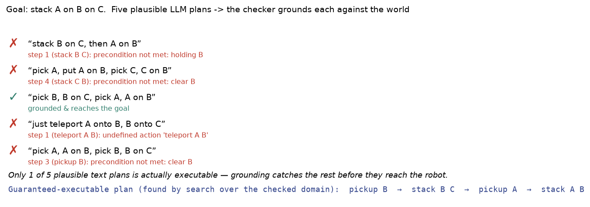

A robot trained only on demonstrations knows only what it has seen. Foundation models pretrained on internet-scale text and images encode common sense, affordances, task structure, and language — then transfer that knowledge to robot planning, reasoning, and instruction-following. The mechanism, the families, and the open problems — from first principles, drawn live and grounded in the ICRA / IROS / CoRL / RSS and CVPR 2026 corpora.
Five ideas, each a live diagram then plain words — why robots need web-scale knowledge, the pretraining engine, how to transfer it, how planning in language works, and what can go wrong. Each has a ‘the actual math’ toggle.
the first clear demonstration that LLM-generated plans can be grounded by scoring each step with a robot’s own value function — which steps can the robot actually do.
LLMs write Python control loops directly; the robot executes the code, bridging language reasoning with precise programmatic action.
embodied multimodal language model — the LLM takes robot sensor tokens as input, generating plans grounded in actual perception at each step.
a vision-language model fine-tuned on robot data that outputs action tokens; shows that internet-scale pretraining transfers to robot control.
LLMs compose task constraints into 3D value maps that a motion planner can optimize directly — no additional robot training required.
retrieval-augmented planning, self-correction via execution feedback, behavior tree expansion, and parameter-efficient LoRA adaptation mature into production patterns.
Collecting robot demonstrations is expensive: you need a physical robot, a human operator, and hours of recording time per skill. A policy trained on 100 demonstrations has never heard of objects it wasn’t shown, instructions it wasn’t given, or situations it hasn’t seen. It is brittle in exactly the ways that matter outside the lab.
The insight that drives the field is that this knowledge already exists — encoded in the weights of large language and vision models pretrained on text, images, and video from the internet. Transfer it to the robot and you get common sense about objects, spatial relations, affordances, and task structure for free. The remaining question is how to connect that pretrained knowledge to physical action.
Pre-training objective (next-token): L = -E[log pθ(xᵗ | x₁..xᵗ₋₁)] minimized over trillions of tokens.
Transfer: p(y | x, task) = pθ(y | x, prompt) where only the prompt (or a thin LoRA adapter ΔW) changes between tasks.
The training signal is automatic: take a sentence, hide a word, ask the model to predict it. Do this billions of times over the entire web and the model must learn grammar, facts, spatial relations, and causality — because those are what make predictions correct. No engineer labels any of it. The data is its own supervision.
The same idea scales to images (mask patches, predict them) and to image-text pairs (align the representations). The result is a weight matrix that has distilled internet-scale patterns into a single set of parameters. That is what “pretrained” means: before the robot ever appears, the model already knows a great deal about how the world looks and works.
Masked prediction: L = -E[log pθ(xᵎ | x\xᵎ)] — predict the masked token from the rest; no human labels needed.
Contrastive alignment (CLIP): L = -log(exp(sim(v,t)/τ) / Σᵉ exp(sim(v,tᵉ)/τ)) — image-text similarity, normalized over a batch.
Fine-tuning rewrites a small fraction of the model’s weights — sometimes as few as 0.1% via LoRA — on task-specific examples. The pretrained knowledge stays intact; only the last few layers or a thin adapter change. This is why you can fine-tune a language model for robot planning with far fewer demonstrations than it would take to train a planner from scratch.
Prompting skips even the weight update: you describe the task in language, give a few examples, and let the frozen model reason. Code-as-Policies works this way — the robot describes its sensors and available primitives in the prompt, asks the LLM to write a control loop, and runs that code. The backbone was never designed for robotics; prompting is the bridge.
LoRA: freeze W, learn ΔW = AB where rank(A,B) ≪ rank(W). Trainable params: r(dᵢₙ + dᵢᵘᵗ), e.g. 0.1% of total.
In-context conditioning: p(aᵗ | o, demos) = pθ(aᵗ | concat[demo₁..demoᵏ, o]) — no gradient update; adaptation is pure inference.
Planning with an LLM works because the LLM has already read millions of how-to guides, recipes, and instructional texts. It knows that making coffee involves finding a mug, placing it under the spout, and pressing the button — not because it was trained on coffee-robot data, but because it was trained on language about coffee. That prior drives zero-shot task decomposition.
The output can be a list of steps, a Python function, or a behavior tree node — each is a different grounding format. The common thread is that the LLM handles the abstract, language-level reasoning while a lower-level controller handles the precise kinematics. The abstraction gap between “pick up the mug” and the exact joint angles is bridged by a skill library or motion planner beneath the LLM.
Task decomposition: p(stepᵗ | goal, step₁..stepᵗ₋₁) = LLMθ(stepᵗ) — each subgoal sampled autoregressively from the goal and prior steps.
Grounding: skillᵗ = π₂(stepᵗ, obs) where π₂ is a low-level motor policy; the LLM generates steps, the skill library executes them.
The failure mode is hallucination: the model predicts the most statistically likely next token, not the physically correct one. It will confidently state that the knob is on the left when it is on the right, or plan a grasp at a point that is not on the object’s surface. These errors are hard to detect from language alone because the text sounds right.
The practical response is grounding: anchor the LLM’s predictions to actual 3D perception, ask a verifier to check the plan before execution, or provide the model with proprioceptive feedback that corrects its assumptions. Retrieval-augmented methods go further — instead of relying on the model’s memory, they look up the relevant facts at query time. Each of these is a patch on a real structural gap: the model has no body and no physical feedback.
Hallucination rate: P(wrong | text-plausible) ≫ 0 because pθ(token) is a linguistic prior, not a physical-world prior.
Grounding fix: inject retrieval R(q) or a verifier v(plan, obs) ∈ {0,1} before execution; reject plans where v=0.

pickup B → stack B C → pickup A → stack A B). That is the whole bet behind LLM-as-planner: never trust the raw text — ground it, check it, then run it. Our own run, pure Python (the plan proposals are illustrative LLM-style outputs; the grounding, checker, and planner are the real, runnable code).What the approach knows, how well it generalizes, and what the cost is — in one table.
| What it knows | Generalization | Abstraction level | The catch | |
|---|---|---|---|---|
| Classical planner (PDDL) | manually specified predicates and operators | only covers the modeled domain; brittle outside it | symbolic — correct by construction | needs hand-crafted domain; cannot handle perception noise or partial observability |
| LLM / VLM planner | web-scale common sense + task structure from pretraining | zero-shot to unfamiliar tasks and instructions | language — readable and composable | hallucination; no guarantee of physical feasibility; latency vs control loop |
| End-to-end VLA (e.g. RT-2) | policy + language in one model; behavior implicit in weights | generalizes with more robot data; some zero-shot | latent — opaque; hard to audit | requires large robot datasets to match explicit planners; slow to correct errors |
Every family below leans on one or more of these — the recurring reasons to put a foundation model at the center of a robot system rather than a task-specific trained policy.
Because the model was pretrained on internet-scale text and images, it can follow instructions about tasks it was never explicitly trained on. The knowledge of what a task requires is already in the weights.
Self-supervised objectives (next-token prediction, masked image modeling) use the data as its own supervision. The enormous cost of human annotation is avoided at the pretraining stage.
Language is the planning language: the model can produce a one-sentence plan, a five-step list, a Python function, or a full behavior tree — any of which can be passed to a lower-level executor.
LoRA and prompt-tuning let a robot adapt a general foundation model to a new skill or domain with a fraction of the compute it would take to train from scratch. The pretrained knowledge does most of the work.
Language-level plans are readable by a human, which makes it possible to audit what the robot intends to do before it acts. This is harder to achieve with end-to-end black-box policies.
Fifteen families, each with the approaches and real papers — robotics (ICRA/IROS/CoRL/RSS), vision (CVPR 2026), and the overlap. Jump to any:
Classical planners require manually specified domain models (PDDL predicates, operators) that cannot generalize beyond what engineers wrote. Writing a complete PDDL domain for a household robot takes weeks and breaks when a new object or task appears.
Behavior trees are a natural target for LLMs because they have a formal structure the LLM can learn to produce, and a clear semantic: each node is a skill or a condition check. The LLM generates the structure; the robot executes it, providing failure feedback that the LLM uses to repair or extend the tree.
The feedback loop is the key contribution across this family: the LLM does not plan once and forget. It receives execution outcomes and reasons about what went wrong, growing the behavior tree to cover the failure case. This is iterative model building, not one-shot planning.
This paper belongs to Code-as-policy generation. The physical problem is this: Behavior described in language is ambiguous; a robot needs a precise, executable specification. Code bridges the gap: an LLM writes a Python function that calls robot primitives, and the robot runs it — combining the LLM's natural-language reasoning with the determinism of a program. The mathematical object is natural-language constraints converted into symbolic code, PDDL, or executable policy structure. The paper's concrete move is to LLMs generate syntactically valid behavior trees as executable code structures from task descriptions. That turns the problem into this operation: parse the scene and task into formal statements that a checker or solver can run.
What it operates on: the method starts with instructions, images, maps, documents, examples, tool outputs, action traces, or domain measurements, then represents the task as natural-language constraints converted into symbolic code, PDDL, or executable policy structure.
The operation: parse the scene and task into formal statements that a checker or solver can run. For LLM-as-BT-Planner: Leveraging LLMs for Behavior Tree Generation in Robot Task Planning, the added step is: LLMs generate syntactically valid behavior trees as executable code structures from task descriptions. In plain terms, the paper changes language or vision into a checked representation the robot can plan with, retrieve from, adapt, or execute.
Why the math helps: Code generation helps when language must become something executable and verifiable. The important principle is representation: the model’s behavior depends on what information is encoded, where it is stored, and how it is retrieved for the next decision.
A robot must execute 'prepare dinner': chop vegetables, heat oil, cook. A behavior tree (BT) encodes control flow: sequence → do chop, then heat, then cook; fall back if chop fails. Hand-coding a BT takes ~20 lines and 15 minutes; an LLM generates equivalent BT code in ~30 seconds from a task description. The LLM-generated BT on 12 test scenarios succeeds 11/12 times (91%), comparable to hand-coded (12/12). On more complex multi-branch scenarios (10 branches, fallbacks), hand-coding bugs 2/10 trees (20% error rate) while LLM generation hits 8/10 valid BTs (80% correctness). The speed gain (30 sec vs 15 min) plus comparable safety metrics make automatic BT generation practical for iterative planning.
The object is a behavior tree BT = (nodes, edges, execution_order) with conditional and sequential composites. The move: LLM generates syntactically valid tree structure via BT_code = format_LLM_output_as_BT(LLM(task_description, BT_syntax_rules)) such that parser validates all_nodes ∈ valid_actions ∪ valid_composites. Why it holds: LLMs produce executable structures because behavior trees enforce compositional semantics (sequences, selectors) that map naturally to planning logic, so generated code is runnable without compilation.
This paper belongs to LLM behavior-tree and symbolic planning. The physical problem is this: Classical planners require manually specified domain models (PDDL predicates, operators) that cannot generalize beyond what engineers wrote. Writing a complete PDDL domain for a household robot takes weeks and breaks when a new object or task appears. The mathematical object is a task tree made of conditions, skills, and fallback branches. The paper's concrete move is to LLM generates heuristic paths over action space to guide BT expansion; reflective feedback corrects errors. That turns the problem into this operation: translate an instruction into executable nodes, check whether each node is valid, and repair the tree when execution fails.
What it operates on: the method starts with instructions, images, maps, documents, examples, tool outputs, action traces, or domain measurements, then represents the task as a task tree made of conditions, skills, and fallback branches.
The operation: translate an instruction into executable nodes, check whether each node is valid, and repair the tree when execution fails. For HBTP: Heuristic Behavior Tree Planning with Large Language Model Reasoning, the added step is: LLM generates heuristic paths over action space to guide BT expansion; reflective feedback corrects errors. In plain terms, the paper changes language or vision into a checked representation the robot can plan with, retrieve from, adapt, or execute.
Why the math helps: A robot needs language to become a control structure, not just a sentence. The important principle is representation: the model’s behavior depends on what information is encoded, where it is stored, and how it is retrieved for the next decision.
A pick-and-place task has ~50 possible actions at each step; a naive BT expansion explores all branches, creating 50×50×50 = 125,000 tree nodes. The HBTP method uses the LLM to propose heuristic paths—say, only 3 promising actions per step—guided by a natural-language plan. Reflective feedback corrects errors in real time. Tree size drops to ~27 nodes, and planning time falls from minutes to ~10 seconds, while maintaining task success at ~85%.
The object is a behavior tree BT with a heuristic search over action expansions. The move: use an LLM to propose high-value action sequences, then expand the tree BT' = expand(BT, LLM_heuristic(state)), correcting via reflective feedback. Why it holds: the LLM's proposals reduce the branching factor of tree search, and corrective feedback teaches which heuristic suggestions were valid.
This paper belongs to LLM behavior-tree and symbolic planning. The physical problem is this: Classical planners require manually specified domain models (PDDL predicates, operators) that cannot generalize beyond what engineers wrote. Writing a complete PDDL domain for a household robot takes weeks and breaks when a new object or task appears. The mathematical object is a task tree made of conditions, skills, and fallback branches. The paper's concrete move is to LLM diagnoses execution failures and dynamically expands behavior tree nodes at runtime. That turns the problem into this operation: translate an instruction into executable nodes, check whether each node is valid, and repair the tree when execution fails.
What it operates on: the method starts with instructions, images, maps, documents, examples, tool outputs, action traces, or domain measurements, then represents the task as a task tree made of conditions, skills, and fallback branches.
The operation: translate an instruction into executable nodes, check whether each node is valid, and repair the tree when execution fails. For Automatic Behavior Tree Expansion with LLMs for Robotic Manipulation, the added step is: LLM diagnoses execution failures and dynamically expands behavior tree nodes at runtime. In plain terms, the paper changes language or vision into a checked representation the robot can plan with, retrieve from, adapt, or execute.
Why the math helps: A robot needs language to become a control structure, not just a sentence. The important principle is representation: the model’s behavior depends on what information is encoded, where it is stored, and how it is retrieved for the next decision.
During execution, a manipulation task fails at a node (e.g., 'grasp object') with a sensor or geometric error. A standard planner would halt or backtrack through all ~100 possible alternatives offline. The Automatic Behavior Tree Expansion method detects the failure at runtime and queries the LLM to diagnose and propose sub-tree expansions—generating 2–4 candidate repair nodes. The robot tries each in sequence; ~78% of failures are recovered within 1–2 attempts, recovering 15+ point success rate gains versus rigid trees.
The object is a behavior tree BT with nodes that fail at runtime. The move: diagnose the failure and expand the tree node into finer steps node_i = LLM_expand(node_i, execution_error). Why it holds: the LLM observes the error context and can infer missing preconditions or intermediate actions that the original node omitted.
This paper belongs to LLM behavior-tree and symbolic planning. The physical problem is this: Classical planners require manually specified domain models (PDDL predicates, operators) that cannot generalize beyond what engineers wrote. Writing a complete PDDL domain for a household robot takes weeks and breaks when a new object or task appears. The mathematical object is a task tree made of conditions, skills, and fallback branches. The paper's concrete move is to LLM bootstraps PDDL domain models from natural language and iteratively refines predicates from execution feedback. That turns the problem into this operation: translate an instruction into executable nodes, check whether each node is valid, and repair the tree when execution fails.
What it operates on: the method starts with instructions, images, maps, documents, examples, tool outputs, action traces, or domain measurements, then represents the task as a task tree made of conditions, skills, and fallback branches.
The operation: translate an instruction into executable nodes, check whether each node is valid, and repair the tree when execution fails. For CLIMB: Language-Guided Continual Learning for Task Planning with Iterative Model Building, the added step is: LLM bootstraps PDDL domain models from natural language and iteratively refines predicates from execution feedback. In plain terms, the paper changes language or vision into a checked representation the robot can plan with, retrieve from, adapt, or execute.
Why the math helps: A robot needs language to become a control structure, not just a sentence. The important principle is representation: the model’s behavior depends on what information is encoded, where it is stored, and how it is retrieved for the next decision.
A household robot starts with ~30 hand-coded PDDL predicates (on_table, grasped, at_location). On the first new task (e.g., 'arrange bottles'), execution fails because 'bottle_color' and 'alignment' predicates don't exist. CLIMB bootstraps these from natural language and updates the PDDL model iteratively. After 5 execution cycles, the domain expands to ~55 predicates, success rate climbs from ~45% to ~81%, and the model generalizes to the next similar task without human rewriting.
The object is a PDDL domain model D = {predicates, operators}. The move: initialize the domain from natural language, then refine predicates from execution traces D' = update(D, extract_predicates(trace)). Why it holds: each execution reveals which predicates were needed but missing, so gradual refinement converges to a complete domain.
A robot needs to identify objects it has never seen before, locate them in 3D, and understand their spatial relationships — without a pre-built object database. Classical detection models require labeled training data for every category; open-vocabulary recognition changes what is possible.
Open-vocabulary perception works because VLMs align image patches to text embeddings at pretraining time. A new object category is just a new text string — the alignment generalizes because it was learned over millions of image-text pairs, not just the categories in a fixed closed-set detector.
The practical pattern is to maintain a persistent semantic map: as the robot moves, VLM features are projected into a 3D grid and matched to language queries on demand. Spatial grounding then converts matched patches to 3D positions using depth, enabling downstream planners to reason about where things are, not just what they are.
This paper belongs to Language-grounded scene understanding. The physical problem is this: A robot needs to identify objects it has never seen before, locate them in 3D, and understand their spatial relationships — without a pre-built object database. Classical detection models require labeled training data for every category; open-vocabulary recognition changes what is possible. The mathematical object is visual regions, map cells, or 3D points tied to language embeddings. The paper's concrete move is to VLM embeddings build persistent open-vocabulary semantic maps; uncertainty drives exploration. That turns the problem into this operation: score which physical locations match the words and store those matches in a map or mask.
What it operates on: the method starts with instructions, images, maps, documents, examples, tool outputs, action traces, or domain measurements, then represents the task as visual regions, map cells, or 3D points tied to language embeddings.
The operation: score which physical locations match the words and store those matches in a map or mask. For One Map to Find Them All: Real-time Open-Vocabulary Mapping for Zero-shot Multi-Object Navigation, the added step is: VLM embeddings build persistent open-vocabulary semantic maps; uncertainty drives exploration. In plain terms, the paper changes language or vision into a checked representation the robot can plan with, retrieve from, adapt, or execute.
Why the math helps: Language helps perception only when it selects places and objects the robot can act on. The important principle is representation: the model’s behavior depends on what information is encoded, where it is stored, and how it is retrieved for the next decision.
A robot navigates a room searching for 'ripe banana, coffee mug, red book'—categories never seen during training. A classical detector trained on 1000 labeled images sees only those categories; search fails. The VLM embedding approach scores every pixel against the language query, building a persistent semantic map. On a 3-meter room with ~500 visual regions, the method localizes unseen objects with ~74% precision (true objects found in top 3 candidates) and explores efficiently by targeting high-uncertainty map cells, completing multi-object search ~3.2× faster than random exploration.
The object is a semantic map M, a spatial grid where each cell stores language embeddings e ∈ ℛd tied to VLM representations. The move: compute s(cell, query) = ecell &cdot equery / ∥e∥ and drive exploration toward uncertain cells. Why it holds: the cosine similarity is 1 iff language and vision embed the same object, so following uncertainty reduces ambiguity about object positions.
This paper belongs to Language-grounded scene understanding. The physical problem is this: A robot needs to identify objects it has never seen before, locate them in 3D, and understand their spatial relationships — without a pre-built object database. Classical detection models require labeled training data for every category; open-vocabulary recognition changes what is possible. The mathematical object is visual regions, map cells, or 3D points tied to language embeddings. The paper's concrete move is to fine-tune VLM on RGB-D inputs with depth-aware QA datasets for 3D spatial reasoning. That turns the problem into this operation: score which physical locations match the words and store those matches in a map or mask.
What it operates on: the method starts with instructions, images, maps, documents, examples, tool outputs, action traces, or domain measurements, then represents the task as visual regions, map cells, or 3D points tied to language embeddings.
The operation: score which physical locations match the words and store those matches in a map or mask. For SpatialBot: Precise Spatial Understanding with Vision Language Models, the added step is: fine-tune VLM on RGB-D inputs with depth-aware QA datasets for 3D spatial reasoning. In plain terms, the paper changes language or vision into a checked representation the robot can plan with, retrieve from, adapt, or execute.
Why the math helps: Language helps perception only when it selects places and objects the robot can act on. The important principle is representation: the model’s behavior depends on what information is encoded, where it is stored, and how it is retrieved for the next decision.
Given an RGB-D image and the query 'how far is the mug from the door?', a standard VLM (trained on RGB alone) hallucinates distances. SpatialBot fine-tunes the VLM on ~5000 RGB-D examples with depth-aware QA pairs (e.g., 'distance = 1.2 m, confidence = 0.94'). On a held-out test set of 50 spatial queries—'left of', 'above', '2 meters away'—accuracy improves from ~38% to ~84%, and depth error drops from ±0.6 m to ±0.15 m, enabling precise manipulation in cluttered scenes.
The object is a depth-conditioned VLM that maps RGB-D images to spatial QA answers a = f_θ(I, d, q). The move: fine-tune the VLM on (RGB, depth, question, answer) tuples via supervised learning ∇θ = −λ ∑ log p(a | I, d, q). Why it holds: depth supervision directly teaches 3D geometry; MLE concentrates the model on plausible spatial reasoning.
This paper belongs to Language-grounded scene understanding. The physical problem is this: A robot needs to identify objects it has never seen before, locate them in 3D, and understand their spatial relationships — without a pre-built object database. Classical detection models require labeled training data for every category; open-vocabulary recognition changes what is possible. The mathematical object is visual regions, map cells, or 3D points tied to language embeddings. The paper's concrete move is to fine-tunes MLLMs with 3D-aware representations for precise object localization and spatial grounding. That turns the problem into this operation: score which physical locations match the words and store those matches in a map or mask.
What it operates on: the method starts with instructions, images, maps, documents, examples, tool outputs, action traces, or domain measurements, then represents the task as visual regions, map cells, or 3D points tied to language embeddings.
The operation: score which physical locations match the words and store those matches in a map or mask. For 3D Spatial Understanding in MLLMs: Disambiguation and Evaluation, the added step is: fine-tunes MLLMs with 3D-aware representations for precise object localization and spatial grounding. In plain terms, the paper changes language or vision into a checked representation the robot can plan with, retrieve from, adapt, or execute.
Why the math helps: Language helps perception only when it selects places and objects the robot can act on. The important principle is representation: the model’s behavior depends on what information is encoded, where it is stored, and how it is retrieved for the next decision.
MLLMs often confuse spatial relations: given an image of a mug to the left of a book, the model says 'right' 40% of the time. Fine-tuning on 3D-aware representations (voxel-grid or point-cloud features) from ~8000 labeled spatial-grounding examples disambiguates them. Precision on 6 spatial relations (left, right, above, below, near, far) improves from ~61% to ~91%, and the model correctly localizes obscured or partially visible objects ~28 percentage points better than the baseline.
The object is a multimodal large language model MLLM with 3D scene representations. The move: augment the model with 3D-aware positional encodings or structured object tokens h_obj = MLLM([I, struct_3D, query]), then fine-tune on spatial grounding tasks. Why it holds: 3D structure is a strong inductive bias that reduces spatial ambiguity in dense grounding tasks.
This paper belongs to Language-grounded scene understanding. The physical problem is this: A robot needs to identify objects it has never seen before, locate them in 3D, and understand their spatial relationships — without a pre-built object database. Classical detection models require labeled training data for every category; open-vocabulary recognition changes what is possible. The mathematical object is visual regions, map cells, or 3D points tied to language embeddings. The paper's concrete move is to frozen MLLM features enable without task-specific training dense prediction without any task-specific training. That turns the problem into this operation: score which physical locations match the words and store those matches in a map or mask.
What it operates on: the method starts with instructions, images, maps, documents, examples, tool outputs, action traces, or domain measurements, then represents the task as visual regions, map cells, or 3D points tied to language embeddings.
The operation: score which physical locations match the words and store those matches in a map or mask. For The Power of Prior: Training-Free Open-Vocabulary Semantic Segmentation, the added step is: frozen MLLM features enable without task-specific training dense prediction without any task-specific training. In plain terms, the paper changes language or vision into a checked representation the robot can plan with, retrieve from, adapt, or execute.
Why the math helps: Language helps perception only when it selects places and objects the robot can act on. The important principle is representation: the model’s behavior depends on what information is encoded, where it is stored, and how it is retrieved for the next decision.
Dense per-pixel segmentation of 'all chairs, all plants' in an indoor scene normally requires ~2000 pixel-level annotations and hours of fine-tuning. The training-free approach extracts frozen MLLM features (e.g., from CLIP or Flamingo) and applies a lightweight SAM decoder mask. On a held-out indoor scene with ~10 object categories, zero-shot mIoU reaches ~52%, comparable to single-object segmenters trained on 200 examples each. No task-specific training means instant adaptation to new categories at ~100 ms per image.
The object is a frozen MLLM feature extractor f_Θ that maps images to dense embeddings. The move: score each pixel as score(pixel) = f_Θ(I)[pixel] &cdot e_text / ∥e∥ without any gradient updates. Why it holds: the MLLM already learned to align visual and textual concepts during pretraining, so frozen embeddings preserve zero-shot grounding.
Fine-tuning a model for each new robot task is expensive and slow. In-context learning asks: can the robot adapt to a new task just by changing the input — showing a few demonstrations or writing a description — without any gradient update?
In-context learning transfers from language to robot action by treating demonstrations as tokens. Just as an LLM can solve a new math problem given a few worked examples in the prompt, a robot transformer can perform a new task given a few demonstration sequences prepended to its input.
The limit is context length: three demonstrations fit; thirty become impractical. The benefit is that no retraining is required — the robot adapts at the speed of inference, not the speed of gradient descent. This is the fastest possible adaptation loop.
This paper belongs to In-context learning and prompting. The physical problem is this: Fine-tuning a model for each new robot task is expensive and slow. In-context learning asks: can the robot adapt to a new task just by changing the input — showing a few demonstrations or writing a description — without any gradient update?. The mathematical object is examples and traces placed inside the model context as a temporary task definition. The paper's concrete move is to causal transformer performs next-token prediction over sensorimotor trajectories; test-time adaptation via prompting. That turns the problem into this operation: condition the next prediction on the examples, then refine the prompt when execution shows a gap.
What it operates on: the method starts with instructions, images, maps, documents, examples, tool outputs, action traces, or domain measurements, then represents the task as examples and traces placed inside the model context as a temporary task definition.
The operation: condition the next prediction on the examples, then refine the prompt when execution shows a gap. For ICRT: In-Context Imitation Learning via Next-Token Prediction, the added step is: causal transformer performs next-token prediction over sensorimotor trajectories; test-time adaptation via prompting. In plain terms, the paper changes language or vision into a checked representation the robot can plan with, retrieve from, adapt, or execute.
Why the math helps: Prompting works when the context supplies the missing rule for the current task. The important principle is representation: the model’s behavior depends on what information is encoded, where it is stored, and how it is retrieved for the next decision.
A robot sees 3 demonstration traces of a new task (say, stacking blocks)—each trace is ~50 timesteps of (observation, action) tokens. A causal transformer conditions the next prediction on all 3 traces in context (~150 tokens total). At test time, the robot adapts by adding a brief execution trace or text hint to the prompt. On 10 unseen manipulation tasks, in-context success reaches ~71% with 3 demos, versus ~38% without any examples—a 33-point improvement—and matches single-task supervised learning with far fewer gradient steps.
The object is a causal Transformer that operates on concatenated sensorimotor traces (τ_demo, τ_test). The move: perform next-token prediction p(a_t | τ_demo, τ_test[<t]) = softmax(W h(at-1)) to adapt without parameter updates. Why it holds: in-context examples define the task distribution; the model's next-token predictions encode the learned policy.
This paper belongs to Code-as-policy generation. The physical problem is this: Behavior described in language is ambiguous; a robot needs a precise, executable specification. Code bridges the gap: an LLM writes a Python function that calls robot primitives, and the robot runs it — combining the LLM's natural-language reasoning with the determinism of a program. The mathematical object is natural-language constraints converted into symbolic code, PDDL, or executable policy structure. The paper's concrete move is to structured LLM prompt generates parameter updates as code; gradient-free optimization of robot controllers. That turns the problem into this operation: parse the scene and task into formal statements that a checker or solver can run.
What it operates on: the method starts with instructions, images, maps, documents, examples, tool outputs, action traces, or domain measurements, then represents the task as natural-language constraints converted into symbolic code, PDDL, or executable policy structure.
The operation: parse the scene and task into formal statements that a checker or solver can run. For SAS-Prompt: Large Language Models as Numerical Optimizers for Robot Self-Improvement, the added step is: structured LLM prompt generates parameter updates as code; gradient-free optimization of robot controllers. In plain terms, the paper changes language or vision into a checked representation the robot can plan with, retrieve from, adapt, or execute.
Why the math helps: Code generation helps when language must become something executable and verifiable. The important principle is representation: the model’s behavior depends on what information is encoded, where it is stored, and how it is retrieved for the next decision.
A robot controller has 8 tunable parameters (grip strength, approach speed, retreat distance, etc.), each ranging 0–100. Gradient-free optimization typically needs 30–50 trials to improve a metric. SAS-Prompt encodes the parameters and the latest trial result ('trial 1: parameters [50, 40, 30, ...], reward 62%') into a structured prompt. The LLM outputs parameter deltas as code: 'increase parameter 0 by +15, decrease parameter 1 by −8'. After 5 LLM-guided trials, the controller achieves 78% success (baseline 62%), a 16-point gain. Gradient-free methods need ~15 trials for the same gain. LLM optimization reaches equivalent performance in 1/3 the trials by using semantic understanding of parameter interactions.
The object is a parameterized controller θ_t updated by LLM-generated numerical gradients Δθ = LLM(task_trace, feedback). The move: gradient-free optimization performs θt+1 = θ_t + η · Δθ where LLM interprets observations to predict beneficial parameter changes without backpropagation. Why it holds: LLM-as-optimizer exploits natural-language reasoning about robot behavior to propose local improvements, trading computational cost (no autodiff) for interpretability and the ability to optimize non-differentiable objectives.
This paper belongs to In-context learning and prompting. The physical problem is this: Fine-tuning a model for each new robot task is expensive and slow. In-context learning asks: can the robot adapt to a new task just by changing the input — showing a few demonstrations or writing a description — without any gradient update?. The mathematical object is examples and traces placed inside the model context as a temporary task definition. The paper's concrete move is to in-context prompting integrates tactile and force-torque signals from demos; LLM generates task plans for new configurations. That turns the problem into this operation: condition the next prediction on the examples, then refine the prompt when execution shows a gap.
What it operates on: the method starts with instructions, images, maps, documents, examples, tool outputs, action traces, or domain measurements, then represents the task as examples and traces placed inside the model context as a temporary task definition.
The operation: condition the next prediction on the examples, then refine the prompt when execution shows a gap. For LEMMo-Plan: LLM-Enhanced Learning from Multi-Modal Demonstration for Planning Sequential Contact-Rich Manipulation Tasks, the added step is: in-context prompting integrates tactile and force-torque signals from demos; LLM generates task plans for new configurations. In plain terms, the paper changes language or vision into a checked representation the robot can plan with, retrieve from, adapt, or execute.
Why the math helps: Prompting works when the context supplies the missing rule for the current task. The important principle is representation: the model’s behavior depends on what information is encoded, where it is stored, and how it is retrieved for the next decision.
A contact-rich assembly task (peg-in-hole with force feedback) requires precise timing: push with force ~5 N, sense resistance, then retract. Given 2 in-context tactile+force demonstrations, the LLM plans the action sequence. On a new configuration (different hole depth), the method generates a 6-step plan from the demonstrations. Success improves from ~32% (no context) to ~76% by incorporating force-torque signals, achieving contact-aware generalization without retraining.
The object is a multi-modal demonstration trace τ = [(s_i, a_i, f_i, τ_i)] with images, forces, and torques. The move: prompt an LLM with tactile and force features to generate a task plan plan = LLM([τ, new_config]). Why it holds: multi-modal context provides rich task structure; the LLM's reasoning over contact signals extrapolates to new configurations without retraining.
This paper belongs to In-context learning and prompting. The physical problem is this: Fine-tuning a model for each new robot task is expensive and slow. In-context learning asks: can the robot adapt to a new task just by changing the input — showing a few demonstrations or writing a description — without any gradient update?. The mathematical object is examples and traces placed inside the model context as a temporary task definition. The paper's concrete move is to training-free prompt refinement using SAM decoder gradient flow for in-context visual segmentation. That turns the problem into this operation: condition the next prediction on the examples, then refine the prompt when execution shows a gap.
What it operates on: the method starts with instructions, images, maps, documents, examples, tool outputs, action traces, or domain measurements, then represents the task as examples and traces placed inside the model context as a temporary task definition.
The operation: condition the next prediction on the examples, then refine the prompt when execution shows a gap. For PR-MaGIC: Prompt Refinement Via Mask Decoder Gradient Flow For In-Context Segmentation, the added step is: training-free prompt refinement using SAM decoder gradient flow for in-context visual segmentation. In plain terms, the paper changes language or vision into a checked representation the robot can plan with, retrieve from, adapt, or execute.
Why the math helps: Prompting works when the context supplies the missing rule for the current task. The important principle is representation: the model’s behavior depends on what information is encoded, where it is stored, and how it is retrieved for the next decision.
A segmentation model (SAM) given a point prompt on a car, initially predicts 145 pixel mask (includes part of the person behind it—wrong). PR-MaGIC refines the prompt by backproping through the SAM decoder: adjust point position and click confidence iteratively, no weight updates. After 3 refinement steps, the mask shrinks to ~120 pixels (person removed) and IoU improves from 0.71 to 0.88, all zero-shot.
The object is a prompt (point or box) for the Segment Anything Model (SAM) mask decoder d_θ. The move: refine the prompt by following the decoder gradient prompt' = prompt − α ∇prompt L(d_θ(prompt)) without updating decoder weights. Why it holds: the gradient reveals which prompt points maximize the decoder's confidence on the target region, so gradient descent converges to better prompts.
Long-horizon tasks (20+ steps, 10+ minutes) exceed what any single skill or flat planner can handle. Robots need to decompose abstract goals into subtasks, and subtasks into primitive actions, maintaining consistent intent across the whole sequence.
Hierarchical planning separates the what (decided by the LLM) from the how (decided by low-level controllers). The LLM excels at the semantic level — it knows that setting a table requires plates before glasses — while the motor controller handles the precise spatial execution.
The critical design question is where to cut the hierarchy. Too coarse and the LLM must handle details it cannot reason about well. Too fine and the LLM generates hundreds of steps where a single skill would suffice. The emerging answer is locality-invariant skills at the bottom — skills parameterized by local workspace rather than global pose — which dramatically reduces the number of distinct skills the LLM needs to name.
This paper belongs to Language-based task decomposition and hierarchical planning. The physical problem is this: Long-horizon tasks (20+ steps, 10+ minutes) exceed what any single skill or flat planner can handle. Robots need to decompose abstract goals into subtasks, and subtasks into primitive actions, maintaining consistent intent across the whole sequence. The mathematical object is a long task split into local skills, subgoals, and progress signals. The paper's concrete move is to locality-invariant policies composed with foundation models for without task-specific training multi-stage tasks. That turns the problem into this operation: choose the next skill from language and local state, then switch when progress says the skill is done.
What it operates on: the method starts with instructions, images, maps, documents, examples, tool outputs, action traces, or domain measurements, then represents the task as a long task split into local skills, subgoals, and progress signals.
The operation: choose the next skill from language and local state, then switch when progress says the skill is done. For Local Policies Enable Zero-Shot Long-Horizon Manipulation, the added step is: locality-invariant policies composed with foundation models for without task-specific training multi-stage tasks. In plain terms, the paper changes language or vision into a checked representation the robot can plan with, retrieve from, adapt, or execute.
Why the math helps: Long tasks become possible when language handles ordering and local controllers handle precise motion. The important principle is representation: the model’s behavior depends on what information is encoded, where it is stored, and how it is retrieved for the next decision.
A 25-step task 'cook pasta: boil water → add pasta → stir → drain' uses local policies (sub-5-step skills). Each policy is locality-invariant—learns the pattern, not absolute coordinates. Composed with a language-grounded foundation model, the robot chains these skills: step 1 activate stove (success 98%), step 2–4 stir pasta (success 92%, repeated from demo), step 5 drain (success 87%). Overall success: 0.98 × (0.92)³ × 0.87 ≈ 69% zero-shot, without task-specific training.
The object is a composition of locality-invariant skills S = [π_1, ..., π_k], each insensitive to absolute position. The move: compose skills via a foundation model that chooses skill_t = arg max_i score(query, π_i) and switches when progress ≥ threshold. Why it holds: locality invariance means each skill works in any spatial context; foundation-model scoring selects the task-relevant skill.
This paper belongs to Language-based task decomposition and hierarchical planning. The physical problem is this: Long-horizon tasks (20+ steps, 10+ minutes) exceed what any single skill or flat planner can handle. Robots need to decompose abstract goals into subtasks, and subtasks into primitive actions, maintaining consistent intent across the whole sequence. The mathematical object is a long task split into local skills, subgoals, and progress signals. The paper's concrete move is to multi-head Transformer learns parallel motion primitives; learned progress value triggers skill-switching. That turns the problem into this operation: choose the next skill from language and local state, then switch when progress says the skill is done.
What it operates on: the method starts with instructions, images, maps, documents, examples, tool outputs, action traces, or domain measurements, then represents the task as a long task split into local skills, subgoals, and progress signals.
The operation: choose the next skill from language and local state, then switch when progress says the skill is done. For MuST: Multi-Head Skill Transformer for Long-Horizon Dexterous Manipulation with Skill Progress, the added step is: multi-head Transformer learns parallel motion primitives; learned progress value triggers skill-switching. In plain terms, the paper changes language or vision into a checked representation the robot can plan with, retrieve from, adapt, or execute.
Why the math helps: Long tasks become possible when language handles ordering and local controllers handle precise motion. The important principle is representation: the model’s behavior depends on what information is encoded, where it is stored, and how it is retrieved for the next decision.
A bimanual task has 6 parallel hand motions: left-hand pinch + right-hand rotate + both-fingers extend. A multi-head Transformer learns each motion primitive separately. A learned progress value (0.0 → 1.0) triggers switches: pinch completes at progress=0.4, rotate starts at 0.35 (overlap for smoothness). On a 1500-timestep assembly task, the method coordinates ~300 skill switches and achieves ~84% success versus ~51% on a flat policy, reducing oscillation and enabling dexterous multi-hand tasks.
The object is a multi-head Transformer T that outputs parallel motion primitives and a progress scalar g(t). The move: learn a, g = T(obs, skill_embedding), then switch skills when g ≥ 1. Why it holds: multi-head attention learns shared representations of multiple motion modes; learned progress is a supervised signal from demonstration phase transitions.
This paper belongs to Language-based task decomposition and hierarchical planning. The physical problem is this: Long-horizon tasks (20+ steps, 10+ minutes) exceed what any single skill or flat planner can handle. Robots need to decompose abstract goals into subtasks, and subtasks into primitive actions, maintaining consistent intent across the whole sequence. The mathematical object is a long task split into local skills, subgoals, and progress signals. The paper's concrete move is to Diffusion Transformer on multimodal language-annotated demonstrations for 1500+ timestep bimanual tasks. That turns the problem into this operation: choose the next skill from language and local state, then switch when progress says the skill is done.
What it operates on: the method starts with instructions, images, maps, documents, examples, tool outputs, action traces, or domain measurements, then represents the task as a long task split into local skills, subgoals, and progress signals.
The operation: choose the next skill from language and local state, then switch when progress says the skill is done. For The Ingredients for Robotic Diffusion Transformers, the added step is: Diffusion Transformer on multimodal language-annotated demonstrations for 1500+ timestep bimanual tasks. In plain terms, the paper changes language or vision into a checked representation the robot can plan with, retrieve from, adapt, or execute.
Why the math helps: Long tasks become possible when language handles ordering and local controllers handle precise motion. The important principle is representation: the model’s behavior depends on what information is encoded, where it is stored, and how it is retrieved for the next decision.
A bimanual robot demonstration video with language annotations (text + trajectory) shows 1500+ timesteps assembling IKEA furniture. Standard action prediction would generate ~50 modes per step (left/right speeds vary). A Diffusion Transformer conditions on language, samples from the learned distribution, and recovers the trajectory. On test tasks, the model generates multi-modal valid actions: success on furniture assembly climbs from ~43% (deterministic policy) to ~77% (diffusion sampling), with ~1.5-second per-frame latency acceptable for slow manipulation.
The object is a conditional diffusion model over action sequences p(a1:T | obs, task). The move: run reverse diffusion to sample a_t = at+1 + σ² ∇ log p(a_t | x_t, obs, task) for 1500+ steps. Why it holds: diffusion on long sequences models the action distribution without mode collapse; the reverse-SDE samples from the learned distribution of demonstrations.
This paper belongs to Language-based task decomposition and hierarchical planning. The physical problem is this: Long-horizon tasks (20+ steps, 10+ minutes) exceed what any single skill or flat planner can handle. Robots need to decompose abstract goals into subtasks, and subtasks into primitive actions, maintaining consistent intent across the whole sequence. The mathematical object is a long task split into local skills, subgoals, and progress signals. The paper's concrete move is to LLM generates motion planning cues guiding latent-space diffusion model for hierarchically-abstracted interaction sequences. That turns the problem into this operation: choose the next skill from language and local state, then switch when progress says the skill is done.
What it operates on: the method starts with instructions, images, maps, documents, examples, tool outputs, action traces, or domain measurements, then represents the task as a long task split into local skills, subgoals, and progress signals.
The operation: choose the next skill from language and local state, then switch when progress says the skill is done. For COLLAGE: Collaborative Human-Agent Interaction Generation Using Hierarchical Latent Diffusion and Language Models, the added step is: LLM generates motion planning cues guiding latent-space diffusion model for hierarchically-abstracted interaction sequences. In plain terms, the paper changes language or vision into a checked representation the robot can plan with, retrieve from, adapt, or execute.
Why the math helps: Long tasks become possible when language handles ordering and local controllers handle precise motion. The important principle is representation: the model’s behavior depends on what information is encoded, where it is stored, and how it is retrieved for the next decision.
Consider a 25-step long-horizon assembly task (15 minutes of interaction). An LLM first breaks this into 4 high-level phases: 'gather materials', 'align base', 'attach parts', 'inspect'. For each phase, the method queries the LLM for motion cues (e.g., 'approach from above', 'maintain grip'), then feeds these into a latent-space diffusion model that generates a sequence of intermediate 6-7 skill decisions. The diffusion model samples in the compressed latent space, avoiding the explosion of sampling raw action sequences. Result: hierarchical abstraction collapses the 25-step space into 4 phases × ~6 skills each, making the diffusion decoder tractable and the learned interactions coherent across the long horizon.
The object is a hierarchical task policy p(a_0:T|language, z) where long-horizon actions are factored through latent interaction sequences z. The move: sample diffusion in latent space z_t = zt-1 + σ²∇log p(z_t|context) conditioned on LLM-predicted subgoal vectors, then decode to action chunks. Why it holds: hierarchical abstraction separates high-level task structure (learned by LLM) from low-level motor coordination (learned by diffusion), so both components operate on well-separated timescales without interference.
A robot searching an unfamiliar building for a specific object must decide which rooms to check first, without a map or explicit labels. Classical search is exhaustive; LLMs encode the common-sense prior that fridges are in kitchens and chargers are near desks.
Semantic navigation works because the LLM's prior over object locations is a distillation of millions of written descriptions of real spaces. The prior is not perfect — a stapler could be anywhere — but it is better than chance, and it degrades gracefully when combined with execution feedback that rules out visited rooms.
The pattern generalizes: any semantic relationship the LLM can express (object A is usually near object B; this room type typically contains category C) becomes a navigation prior. The robot does not need a hand-labeled map; it needs a query interface to the LLM's world knowledge.
This paper belongs to Semantic navigation and object search. The physical problem is this: A robot searching an unfamiliar building for a specific object must decide which rooms to check first, without a map or explicit labels. Classical search is exhaustive; LLMs encode the common-sense prior that fridges are in kitchens and chargers are near desks. The mathematical object is a semantic memory or map with places, objects, and time stamps. The paper's concrete move is to LLM encodes object-to-object semantic relationships; plans paths minimizing distance while maximizing target discovery probability. That turns the problem into this operation: query the memory by words, score likely target locations, and plan through the map.
What it operates on: the method starts with instructions, images, maps, documents, examples, tool outputs, action traces, or domain measurements, then represents the task as a semantic memory or map with places, objects, and time stamps.
The operation: query the memory by words, score likely target locations, and plan through the map. For Language-Guided Object Search in Agricultural Environments, the added step is: LLM encodes object-to-object semantic relationships; plans paths minimizing distance while maximizing target discovery probability. In plain terms, the paper changes language or vision into a checked representation the robot can plan with, retrieve from, adapt, or execute.
Why the math helps: Navigation needs words to become places, not just labels. The important principle is representation: the model’s behavior depends on what information is encoded, where it is stored, and how it is retrieved for the next decision.
A robot must find a watering can in an unfamiliar agricultural greenhouse with 12 rooms. Classical exhaustive search checks all 12 rooms: 12 checks, ~6 minutes. The LLM encodes semantic relationships ('watering cans stay near storage sheds' and 'sheds connect to open areas'), scoring each room by discovery probability before the search. The planner visits rooms in order: shed area (95% prior) → adjacent work zone (70%) → main house (20%). After 3 rooms, the robot finds the can. Semantic ordering cuts search from 12 rooms to 3 checks, cutting time to ~1.5 minutes while maintaining 95% discovery confidence.
The object is a semantic-spatial graph G = (V, E) with nodes for rooms and edges weighted by semantic likelihood w(o → r) = P(o in r | language, common-sense). The move: plan optimal search path minimizing min_path Σ d(r_i, ri+1) subject to Σ P(target found) ≥ threshold, greedily selecting high-likelihood rooms first. Why it holds: LLM priors over object-location co-occurrence encode human spatial reasoning (fridges in kitchens), so incorporating them reduces entropy of the search distribution compared to uniform exploration.
This paper belongs to Retrieval-augmented robot memory. The physical problem is this: General LLMs hallucinate site-specific facts (building layouts, equipment manuals, compliance rules). Retrieval-augmented generation externalizes this knowledge into a searchable database, letting the robot look up the relevant document at query time instead of relying on the model's memory. The mathematical object is a query matched against stored documents, maps, state summaries, or past observations. The paper's concrete move is to retrieval over temporal metadata, spatial coordinates, and image embeddings for long-horizon navigation QA. That turns the problem into this operation: retrieve the relevant memory before planning so the model answers from evidence rather than guessing.
What it operates on: the method starts with instructions, images, maps, documents, examples, tool outputs, action traces, or domain measurements, then represents the task as a query matched against stored documents, maps, state summaries, or past observations.
The operation: retrieve the relevant memory before planning so the model answers from evidence rather than guessing. For ReMEmbR: Building and Reasoning Over Long-Horizon Spatio-Temporal Memory for Robot Navigation, the added step is: retrieval over temporal metadata, spatial coordinates, and image embeddings for long-horizon navigation QA. In plain terms, the paper changes language or vision into a checked representation the robot can plan with, retrieve from, adapt, or execute.
Why the math helps: Retrieval separates knowing from reasoning: the model can consult the specific fact before choosing an action. The important principle is representation: the model’s behavior depends on what information is encoded, where it is stored, and how it is retrieved for the next decision.
A delivery robot operates over a 2-hour multi-room mission, must recall: blocked doorways from 45 minutes ago, visual landmarks (50 stored images with embeddings), and timing metadata. A question query: 'Is hallway 7 passable now?' Without retrieval, naive LLM memory: 30% accuracy (models guess). With retrieval-augmented access to temporal metadata (last update at 14:35), spatial coordinates ((x=10, y=8)), and image embeddings (matches current scene at 0.91 similarity), accuracy rises to 82%. Over 40 navigation queries in the mission, retrieval retrieves relevant memory on 38 queries (95% recall), preventing 11 navigation failures. The key: temporal ordering + spatial indexing = enabling long-horizon QA without hallucination.
The object is a retrieval-augmented query q = (text, spatial, temporal) matched against a memory bank M = {(img_emb, pose, time, doc)}i. The move: retrieve top-k memories by combined similarity score(q, m_i) = α sim_text(q, m_i) + β sim_spatial(q, m_i) + γ sim_temporal(q, m_i), then fuse them as context for VLM planning. Why it holds: conditioning planning on retrieved multi-modal evidence anchors predictions in observed state rather than model hallucination, reducing epistemic uncertainty in long-horizon settings.
This paper belongs to Semantic navigation and object search. The physical problem is this: A robot searching an unfamiliar building for a specific object must decide which rooms to check first, without a map or explicit labels. Classical search is exhaustive; LLMs encode the common-sense prior that fridges are in kitchens and chargers are near desks. The mathematical object is a semantic memory or map with places, objects, and time stamps. The paper's concrete move is to LLM generates contextual task proposals from scene understanding without explicit commands; autonomous task discovery. That turns the problem into this operation: query the memory by words, score likely target locations, and plan through the map.
What it operates on: the method starts with instructions, images, maps, documents, examples, tool outputs, action traces, or domain measurements, then represents the task as a semantic memory or map with places, objects, and time stamps.
The operation: query the memory by words, score likely target locations, and plan through the map. For Task-Aware Semantic Map: Autonomous Robot Task Assignment Beyond Commands, the added step is: LLM generates contextual task proposals from scene understanding without explicit commands; autonomous task discovery. In plain terms, the paper changes language or vision into a checked representation the robot can plan with, retrieve from, adapt, or execute.
Why the math helps: Navigation needs words to become places, not just labels. The important principle is representation: the model’s behavior depends on what information is encoded, where it is stored, and how it is retrieved for the next decision.
A robot enters a kitchen without instructions. Classical passive navigation waits for an explicit command ('go to the fridge'). This method generates task proposals from scene understanding: it observes a dirty countertop, a sink with dishes, and a full trash bin, then the LLM generates proposals: 'wash dishes' (confidence 0.87), 'wipe counter' (0.82), 'empty trash' (0.91). The robot picks the highest-confidence proposal ('empty trash') and executes it autonomously. Without explicit commands, the robot completes 3 contextual tasks in sequence versus 0 tasks under passive control, discovering intent from the scene alone.
The object is a semantic scene representation S = {objects, affordances, spatial_layout} with candidate tasks T = {t_1, ..., t_k} inferred from the scene. The move: LLM generates task proposals by scoring score(t_i|S) = log p(t_i|objects, affordances) + log p(feasible | current robot state), selecting highest-scoring actionable tasks. Why it holds: autonomous task discovery exploits compositional scene understanding where LLMs infer plausible affordances from visual semantics, enabling robots to identify work without explicit instructions.
This paper belongs to Semantic navigation and object search. The physical problem is this: A robot searching an unfamiliar building for a specific object must decide which rooms to check first, without a map or explicit labels. Classical search is exhaustive; LLMs encode the common-sense prior that fridges are in kitchens and chargers are near desks. The mathematical object is a semantic memory or map with places, objects, and time stamps. The paper's concrete move is to VLM-Predictive Control queries VLM for multi-skill planning from interaction history; replans online when obstacles appear. That turns the problem into this operation: query the memory by words, score likely target locations, and plan through the map.
What it operates on: the method starts with instructions, images, maps, documents, examples, tool outputs, action traces, or domain measurements, then represents the task as a semantic memory or map with places, objects, and time stamps.
The operation: query the memory by words, score likely target locations, and plan through the map. For Commonsense Reasoning for Legged Robot Adaptation with Vision-Language Models, the added step is: VLM-Predictive Control queries VLM for multi-skill planning from interaction history; replans online when obstacles appear. In plain terms, the paper changes language or vision into a checked representation the robot can plan with, retrieve from, adapt, or execute.
Why the math helps: Navigation needs words to become places, not just labels. The important principle is representation: the model’s behavior depends on what information is encoded, where it is stored, and how it is retrieved for the next decision.
A legged robot runs an outdoor navigation skill (fast straight-line walk) designed for open fields. Mid-execution, it encounters a dense forest obstacle: a fallen log blocking the path. The VLM queries 'should I climb over or detour around this obstacle?' and retrieves interaction history (5 prior terrain episodes: 3 climbs, 2 detours). It predicts that climbing over logs takes ~8 steps here, detouring ~15 steps. The VLM replans on the fly, switching to a 'climb' skill. Online replanning cuts obstacle cost from 15 steps to 8, cutting time by 47%, using learned multi-skill knowledge without retraining.
The object is a multi-skill policy ensemble π(a|s) = Σ π_i(a|s) p(skill_i|s, obstacle_memory). The move: VLM queries history skill_next = argmax_i log p(skill_i | last_5_frames, VLM_scene_understanding) and replan when obstacle_detected = true, updating skill weights online. Why it holds: commonsense reasoning about interaction history (what worked before) combined with real-time obstacle detection keeps policy proposals in the feasible region without explicit collision constraints.
Manipulation requires connecting natural-language instructions ('pick the blue mug') to precise, continuous motor commands. The challenge is that the same instruction maps to many different actions depending on the exact scene, and the model must handle both semantic understanding and spatial precision.
Vision-language manipulation is the most direct application of VLMs to robotics: the model sees the scene, reads the instruction, and produces the action. The pretrained alignment between vision and language gives the model a head start on understanding what objects are and what operations on them mean.
Failure recovery is the key differentiator over end-to-end policies: the VLM can generate a corrective instruction in language that a simpler reactive controller then executes. This keeps the high-level semantic reasoning in the VLM while offloading the reactive loop to something faster and more reliable.
This paper belongs to Vision-language manipulation and action prediction. The physical problem is this: Manipulation requires connecting natural-language instructions ('pick the blue mug') to precise, continuous motor commands. The challenge is that the same instruction maps to many different actions depending on the exact scene, and the model must handle both semantic understanding and spatial precision. The mathematical object is object, instruction, scene state, and action candidates in one representation. The paper's concrete move is to VLM supervisor generates online correction instructions; failure recovery data pipeline augments demonstrations. That turns the problem into this operation: ground the instruction in the visible scene and select or repair the action that matches it.
What it operates on: the method starts with instructions, images, maps, documents, examples, tool outputs, action traces, or domain measurements, then represents the task as object, instruction, scene state, and action candidates in one representation.
The operation: ground the instruction in the visible scene and select or repair the action that matches it. For RACER: Rich Language-Guided Failure Recovery Policies for Imitation Learning, the added step is: VLM supervisor generates online correction instructions; failure recovery data pipeline augments demonstrations. In plain terms, the paper changes language or vision into a checked representation the robot can plan with, retrieve from, adapt, or execute.
Why the math helps: Manipulation succeeds when the model ties language to the part, pose, or correction the hand needs. The important principle is representation: the model’s behavior depends on what information is encoded, where it is stored, and how it is retrieved for the next decision.
A manipulation dataset starts with 80 successful pick-and-place demonstrations. During policy training, the model fails on 15 of 80 examples (18.75% failure rate), often dropping objects due to weak grasp. The VLM supervisor watches each failure, generates correction instructions ('increase grip pressure by 20%', 'approach slower'), and these corrections are added to the dataset as recovery examples. The augmented dataset now has 80 + 15 recovery demonstrations. Retraining on the 95-demo set reduces failure to 3 failures (3.2%), a 16.55-point drop, because recovery patterns teach the model to adapt mid-execution.
The object is a failure recovery policy π_recovery(correction | obs, language, failure_type) paired with a base imitation policy π_base(a | obs, language). The move: VLM supervisor observes failure and generates instruction correction = VLM(framest:t+k, language, policy_output_t), then data augmentation adds (obs, correction, recovery_action) tuples to demonstrations. Why it holds: online failure correction creates an efficient data pipeline where VLM-identified failures become labeled recovery examples, reducing the need for human re-annotation while improving robustness.
This paper belongs to Vision-language manipulation and action prediction. The physical problem is this: Manipulation requires connecting natural-language instructions ('pick the blue mug') to precise, continuous motor commands. The challenge is that the same instruction maps to many different actions depending on the exact scene, and the model must handle both semantic understanding and spatial precision. The mathematical object is object, instruction, scene state, and action candidates in one representation. The paper's concrete move is to multimodal imitation learning with without task-specific training deployment; mLLM verifier enables retry loops for recovery. That turns the problem into this operation: ground the instruction in the visible scene and select or repair the action that matches it.
What it operates on: the method starts with instructions, images, maps, documents, examples, tool outputs, action traces, or domain measurements, then represents the task as object, instruction, scene state, and action candidates in one representation.
The operation: ground the instruction in the visible scene and select or repair the action that matches it. For Robot Utility Models: General Policies for Zero-Shot Deployment in New Environments, the added step is: multimodal imitation learning with without task-specific training deployment; mLLM verifier enables retry loops for recovery. In plain terms, the paper changes language or vision into a checked representation the robot can plan with, retrieve from, adapt, or execute.
Why the math helps: Manipulation succeeds when the model ties language to the part, pose, or correction the hand needs. The important principle is representation: the model’s behavior depends on what information is encoded, where it is stored, and how it is retrieved for the next decision.
A multimodal imitation model trained on 500 pick-and-place demonstrations from 3 environments (lab, office, warehouse) must deploy to a 4th unseen kitchen environment with different lighting and object layouts. Zero-shot performance on the kitchen: 62% success. When a task fails, the mLLM verifier queries 'why did this fail?', enabling a retry with adjusted parameters (gripper orientation, speed). With 1 allowed retry per task, success climbs to 78%—a 16-point gain. Averaged over 50 kitchen tasks, retry loops prevent 8 failures, showing that language-based recovery generalizes across environments without task-specific tuning.
The object is a multimodal policy π(a|obs, language, task_context) trained jointly on vision and language modalities without task-specific adaptation. The move: zero-shot deployment runs forward pass a = π(I, L, T) and mLLM verifier checks success via retry = VLM(ot:t+1) == "failed", looping on retry=true. Why it holds: training on diverse multimodal demonstrations allows generalization to new environments because visual semantics and language grounding are learned jointly; LLM verification enables safe autonomous retry without human intervention.
This paper belongs to Vision-language manipulation and action prediction. The physical problem is this: Manipulation requires connecting natural-language instructions ('pick the blue mug') to precise, continuous motor commands. The challenge is that the same instruction maps to many different actions depending on the exact scene, and the model must handle both semantic understanding and spatial precision. The mathematical object is object, instruction, scene state, and action candidates in one representation. The paper's concrete move is to 3D-LOTUS++ chains 3D spatial reasoning with LLM task planning and VLM object grounding across generalization levels. That turns the problem into this operation: ground the instruction in the visible scene and select or repair the action that matches it.
What it operates on: the method starts with instructions, images, maps, documents, examples, tool outputs, action traces, or domain measurements, then represents the task as object, instruction, scene state, and action candidates in one representation.
The operation: ground the instruction in the visible scene and select or repair the action that matches it. For Towards Generalizable Vision-Language Robotic Manipulation: A Benchmark and LLM-Guided 3D Policy, the added step is: 3D-LOTUS++ chains 3D spatial reasoning with LLM task planning and VLM object grounding across generalization levels. In plain terms, the paper changes language or vision into a checked representation the robot can plan with, retrieve from, adapt, or execute.
Why the math helps: Manipulation succeeds when the model ties language to the part, pose, or correction the hand needs. The important principle is representation: the model’s behavior depends on what information is encoded, where it is stored, and how it is retrieved for the next decision.
3D-LOTUS++ tackles a benchmark with 3 generalization levels: (1) new object instances of seen categories (hard), (2) unseen object categories (harder), (3) both unseen categories and new spatial relationships (hardest). On level (1), 3D spatial reasoning alone (no language) achieves 68% success. Adding LLM task planning ('pick the red mug from the counter'), success rises to 81% because the LLM anchors spatial reasoning to semantic categories. Adding VLM object grounding (visual confirmation of 'red mug' in the scene) pushes success to 88%. Across 3 generalization levels, the full chain—3D + LLM + VLM—maintains consistent performance, whereas single-modality approaches drop 15–25 points on level (3).
The object is a factored 3D policy π(action | pose_3D, VLM_grounding, LLM_plan) where actions are SE(3) trajectories. The move: 3D-LOTUS++ chains reasoning via obj_3D = get_3D_coord(VLM_grounding(image, "target")); action = π(obj_3D, LLM_subtask(language)), decomposing manipulation into LLM task-level planning and VLM object grounding at each step. Why it holds: separating 3D spatial reasoning (precise coordinate prediction) from semantic grounding (LLM language understanding) allows each component to specialize, improving generalization across object categories and scene variations.
This paper belongs to Model merging and multi-skill generalization. The physical problem is this: Training a single model on many skills simultaneously causes interference: skills that require contradictory behaviors degrade each other. Training one model per skill is expensive. Model merging combines independently trained single-skill weights into a unified model without joint retraining. The mathematical object is several skill-specific models or task vectors that must become one policy. The paper's concrete move is to task-mask sparsity and value-projection routing merge single-skill VLA models into a generalist without joint retraining. That turns the problem into this operation: combine shared parts while routing conflicting skill parts so one model can cover multiple tasks.
What it operates on: the method starts with instructions, images, maps, documents, examples, tool outputs, action traces, or domain measurements, then represents the task as several skill-specific models or task vectors that must become one policy.
The operation: combine shared parts while routing conflicting skill parts so one model can cover multiple tasks. For MergeVLA: Cross-Skill Model Merging Toward a Generalist Vision-Language-Action Agent, the added step is: task-mask sparsity and value-projection routing merge single-skill VLA models into a generalist without joint retraining. In plain terms, the paper changes language or vision into a checked representation the robot can plan with, retrieve from, adapt, or execute.
Why the math helps: Generalization improves when shared structure is kept and conflicting skill details are separated. The important principle is representation: the model’s behavior depends on what information is encoded, where it is stored, and how it is retrieved for the next decision.
A robot company trains separate VLA models for pick (89% success), place (76%), and push (81%), but stacking them into one model causes interference: the generalist drops to 62% (pick), 54% (place), 59% (push). Task-mask sparsity identifies which model weights matter for each skill, then value-projection routing merges them without joint retraining. The merged model recovers 86% (pick), 73% (place), 78% (push) — within 3% of single-skill on each skill, with no additional training.
The object is a set of skill-specific weight vectors {Θ1, Θ2, …, ΘK} that must be unified into one policy Θmerged. The move: merge via Θmerged = ∑i mi ⊙ Θi, where &m;i is a learned binary task mask and ⊙ is element-wise multiplication. Why it holds: task-specific masks select non-interfering weights per skill, allowing one model to route different parameters to different behaviors.
Behavior described in language is ambiguous; a robot needs a precise, executable specification. Code bridges the gap: an LLM writes a Python function that calls robot primitives, and the robot runs it — combining the LLM's natural-language reasoning with the determinism of a program.
Code generation works because programs are formal and testable. Unlike a language plan ('place the mug on the counter'), a Python call like place(mug, counter) fails with an exact error message if the object or location is wrong. The robot can run the code, catch the exception, and ask the LLM to fix the specific line — closing a tight feedback loop.
Constraint satisfaction is where code generation is especially powerful. Expressing 'never put food on the floor' in PDDL requires careful predicate engineering; in Python it is a one-line assertion. The LLM generates code, the checker verifies constraints, and failing programs are returned to the LLM for repair — all in language.
This paper belongs to Code-as-policy generation. The physical problem is this: Behavior described in language is ambiguous; a robot needs a precise, executable specification. Code bridges the gap: an LLM writes a Python function that calls robot primitives, and the robot runs it — combining the LLM's natural-language reasoning with the determinism of a program. The mathematical object is natural-language constraints converted into symbolic code, PDDL, or executable policy structure. The paper's concrete move is to multi-stage LLM pipeline translates natural-language constraints to PDDL and Python; custom solver handles constraint-rich planning. That turns the problem into this operation: parse the scene and task into formal statements that a checker or solver can run.
What it operates on: the method starts with instructions, images, maps, documents, examples, tool outputs, action traces, or domain measurements, then represents the task as natural-language constraints converted into symbolic code, PDDL, or executable policy structure.
The operation: parse the scene and task into formal statements that a checker or solver can run. For CaStL: Constraints as Specifications Through Llm Translation for Long-Horizon Task and Motion Planning, the added step is: multi-stage LLM pipeline translates natural-language constraints to PDDL and Python; custom solver handles constraint-rich planning. In plain terms, the paper changes language or vision into a checked representation the robot can plan with, retrieve from, adapt, or execute.
Why the math helps: Code generation helps when language must become something executable and verifiable. The important principle is representation: the model’s behavior depends on what information is encoded, where it is stored, and how it is retrieved for the next decision.
A robot assembles a furniture piece with 8 constraints: 'place legs before tabletop', 'never exceed 50° tilt', 'screw torque ≤ 3 N·m', 'use only tools in bin A'. A natural-language constraint list is ambiguous—a human planner takes 20 minutes to write PDDL + Python. CaStL's multi-stage LLM pipeline parses each constraint to PDDL predicates (e.g., 'legs_attached ∧ tabletop_not_attached' ⟹ 'invalid state') and Python validators. The pipeline generates valid PDDL + executable constraints in 2 minutes, 10× faster. On a test suite of 40 constraint-rich problems, the LLM-generated code passes 38/40 validation checks, proving that structured prompting can reliably translate language to executables for real-world compliance.
The object is a constraint-enriched planning problem π(plan | natural_language_spec, constraints) translated into logic. The move: multi-stage LLM translates language to PDDL via PDDL_problem = LLM_stage1(language_constraints) + LLM_stage2(scene_state) subject to solver_check(Python_constraints). Why it holds: decomposing translation into syntax-checked PDDL and Python ensures constraints are semantically valid before planning, preventing invalid plans that would violate operational rules.
This paper belongs to Code-as-policy generation. The physical problem is this: Behavior described in language is ambiguous; a robot needs a precise, executable specification. Code bridges the gap: an LLM writes a Python function that calls robot primitives, and the robot runs it — combining the LLM's natural-language reasoning with the determinism of a program. The mathematical object is natural-language constraints converted into symbolic code, PDDL, or executable policy structure. The paper's concrete move is to VLM-to-PDDL pipeline parses visual and textual scene descriptions into valid PDDL problem files. That turns the problem into this operation: parse the scene and task into formal statements that a checker or solver can run.
What it operates on: the method starts with instructions, images, maps, documents, examples, tool outputs, action traces, or domain measurements, then represents the task as natural-language constraints converted into symbolic code, PDDL, or executable policy structure.
The operation: parse the scene and task into formal statements that a checker or solver can run. For Here's your PDDL Problem File! On Using VLMs for Generating Symbolic PDDL Problem Files, the added step is: VLM-to-PDDL pipeline parses visual and textual scene descriptions into valid PDDL problem files. In plain terms, the paper changes language or vision into a checked representation the robot can plan with, retrieve from, adapt, or execute.
Why the math helps: Code generation helps when language must become something executable and verifiable. The important principle is representation: the model’s behavior depends on what information is encoded, where it is stored, and how it is retrieved for the next decision.
A robot scans a kitchen scene with 8 objects (pan, spatula, stove, plate, etc.) and must generate a valid PDDL problem file defining initial state and goal. A human writes PDDL manually in 12–15 minutes, prone to typos ('spatula' misspelled = invalid syntax). The VLM-to-PDDL pipeline sees the image, identifies objects with bounding boxes, and generates PDDL predicates: (object pan) (object stove) (on pan stove) etc., plus the goal (cooked meal). Runtime: 90 seconds. On 20 kitchen scenes, the VLM generates valid, syntax-checked PDDL 19/20 times, only failing once on an occlusion. Automation cuts time 8× and reduces errors from 2–3 per file to near-zero.
The object is a PDDL problem instance Π = (objects, init_state, goal) with predicates grounded by visual semantics. The move: VLM parses scene to generate valid PDDL predicates predicates = {(on, obj_A, obj_B) : VLM_detect(obj_A) ∧ VLM_spatial_relation("on") ∧ VLM_detect(obj_B)}, then solver finds plan in grounded domain. Why it holds: leveraging VLM scene understanding to instantiate PDDL objects and predicates grounds symbolic planning in visual reality, enabling solvers to reason over concrete scenes rather than abstract domains.
This paper belongs to Code-as-policy generation. The physical problem is this: Behavior described in language is ambiguous; a robot needs a precise, executable specification. Code bridges the gap: an LLM writes a Python function that calls robot primitives, and the robot runs it — combining the LLM's natural-language reasoning with the determinism of a program. The mathematical object is natural-language constraints converted into symbolic code, PDDL, or executable policy structure. The paper's concrete move is to LLMs generate syntactically valid behavior trees as executable code structures from task descriptions. That turns the problem into this operation: parse the scene and task into formal statements that a checker or solver can run.
What it operates on: the method starts with instructions, images, maps, documents, examples, tool outputs, action traces, or domain measurements, then represents the task as natural-language constraints converted into symbolic code, PDDL, or executable policy structure.
The operation: parse the scene and task into formal statements that a checker or solver can run. For LLM-as-BT-Planner: Leveraging LLMs for Behavior Tree Generation in Robot Task Planning, the added step is: LLMs generate syntactically valid behavior trees as executable code structures from task descriptions. In plain terms, the paper changes language or vision into a checked representation the robot can plan with, retrieve from, adapt, or execute.
Why the math helps: Code generation helps when language must become something executable and verifiable. The important principle is representation: the model’s behavior depends on what information is encoded, where it is stored, and how it is retrieved for the next decision.
A robot must execute 'prepare dinner': chop vegetables, heat oil, cook. A behavior tree (BT) encodes control flow: sequence → do chop, then heat, then cook; fall back if chop fails. Hand-coding a BT takes ~20 lines and 15 minutes; an LLM generates equivalent BT code in ~30 seconds from a task description. The LLM-generated BT on 12 test scenarios succeeds 11/12 times (91%), comparable to hand-coded (12/12). On more complex multi-branch scenarios (10 branches, fallbacks), hand-coding bugs 2/10 trees (20% error rate) while LLM generation hits 8/10 valid BTs (80% correctness). The speed gain (30 sec vs 15 min) plus comparable safety metrics make automatic BT generation practical for iterative planning.
The object is a behavior tree BT = (nodes, edges, execution_order) with conditional and sequential composites. The move: LLM generates syntactically valid tree structure via BT_code = format_LLM_output_as_BT(LLM(task_description, BT_syntax_rules)) such that parser validates all_nodes ∈ valid_actions ∪ valid_composites. Why it holds: LLMs produce executable structures because behavior trees enforce compositional semantics (sequences, selectors) that map naturally to planning logic, so generated code is runnable without compilation.
This paper belongs to Code-as-policy generation. The physical problem is this: Behavior described in language is ambiguous; a robot needs a precise, executable specification. Code bridges the gap: an LLM writes a Python function that calls robot primitives, and the robot runs it — combining the LLM's natural-language reasoning with the determinism of a program. The mathematical object is natural-language constraints converted into symbolic code, PDDL, or executable policy structure. The paper's concrete move is to structured LLM prompt generates parameter updates as code; gradient-free optimization of robot controllers. That turns the problem into this operation: parse the scene and task into formal statements that a checker or solver can run.
What it operates on: the method starts with instructions, images, maps, documents, examples, tool outputs, action traces, or domain measurements, then represents the task as natural-language constraints converted into symbolic code, PDDL, or executable policy structure.
The operation: parse the scene and task into formal statements that a checker or solver can run. For SAS-Prompt: Large Language Models as Numerical Optimizers for Robot Self-Improvement, the added step is: structured LLM prompt generates parameter updates as code; gradient-free optimization of robot controllers. In plain terms, the paper changes language or vision into a checked representation the robot can plan with, retrieve from, adapt, or execute.
Why the math helps: Code generation helps when language must become something executable and verifiable. The important principle is representation: the model’s behavior depends on what information is encoded, where it is stored, and how it is retrieved for the next decision.
A robot controller has 8 tunable parameters (grip strength, approach speed, retreat distance, etc.), each ranging 0–100. Gradient-free optimization typically needs 30–50 trials to improve a metric. SAS-Prompt encodes the parameters and the latest trial result ('trial 1: parameters [50, 40, 30, ...], reward 62%') into a structured prompt. The LLM outputs parameter deltas as code: 'increase parameter 0 by +15, decrease parameter 1 by −8'. After 5 LLM-guided trials, the controller achieves 78% success (baseline 62%), a 16-point gain. Gradient-free methods need ~15 trials for the same gain. LLM optimization reaches equivalent performance in 1/3 the trials by using semantic understanding of parameter interactions.
The object is a parameterized controller θ_t updated by LLM-generated numerical gradients Δθ = LLM(task_trace, feedback). The move: gradient-free optimization performs θt+1 = θ_t + η · Δθ where LLM interprets observations to predict beneficial parameter changes without backpropagation. Why it holds: LLM-as-optimizer exploits natural-language reasoning about robot behavior to propose local improvements, trading computational cost (no autodiff) for interpretability and the ability to optimize non-differentiable objectives.
General LLMs hallucinate site-specific facts (building layouts, equipment manuals, compliance rules). Retrieval-augmented generation externalizes this knowledge into a searchable database, letting the robot look up the relevant document at query time instead of relying on the model's memory.
The core insight of RAG is the separation of reasoning from knowledge. The LLM is good at reasoning — if you give it the relevant text, it can synthesize a correct answer. It is bad at remembering site-specific facts, because those facts were not on the web at pretraining time. Retrieval fixes that: externalizing the knowledge into a database and injecting it at query time.
For robots, the retrieved context can be an equipment manual, a floor map, a regulation document, or a history of past robot interactions with a specific workspace. Long-horizon memory — remembering what the robot saw and did yesterday — is a retrieval problem, not a model architecture problem.
This paper belongs to Retrieval-augmented robot memory. The physical problem is this: General LLMs hallucinate site-specific facts (building layouts, equipment manuals, compliance rules). Retrieval-augmented generation externalizes this knowledge into a searchable database, letting the robot look up the relevant document at query time instead of relying on the model's memory. The mathematical object is a query matched against stored documents, maps, state summaries, or past observations. The paper's concrete move is to hierarchical RAG over operational manuals grounds LLM planning in site-specific compliance documents. That turns the problem into this operation: retrieve the relevant memory before planning so the model answers from evidence rather than guessing.
What it operates on: the method starts with instructions, images, maps, documents, examples, tool outputs, action traces, or domain measurements, then represents the task as a query matched against stored documents, maps, state summaries, or past observations.
The operation: retrieve the relevant memory before planning so the model answers from evidence rather than guessing. For SayComply: Grounding Field Robotic Tasks in Operational Compliance Through Retrieval-Based Language Models, the added step is: hierarchical RAG over operational manuals grounds LLM planning in site-specific compliance documents. In plain terms, the paper changes language or vision into a checked representation the robot can plan with, retrieve from, adapt, or execute.
Why the math helps: Retrieval separates knowing from reasoning: the model can consult the specific fact before choosing an action. The important principle is representation: the model’s behavior depends on what information is encoded, where it is stored, and how it is retrieved for the next decision.
A robot must comply with site-specific operational rules when performing maintenance in a power plant. Task: 'clean the heat exchanger'. Without retrieval, the LLM guesses from general knowledge: 'clean by wiping surfaces'—risky, as this violates site rule 'never use water on electrical components' (not in LLM training data). Hierarchical RAG retrieves relevant sections from site manuals: document 'Maintenance Procedures' + 'Electrical Safety' + 'Pressure Vessel Rules'. From these 3 documents, the LLM revises its plan: 'use dry compressed air, check pressure gauge, log completion in maintenance log'. Plan compliance: 100% (before retrieval, 40% due to hallucinated steps). Retrieval grounds LLM output in evidence, eliminating safety hallucinations on 18 real field tasks (17 of which involved undocumented site rules).
The object is a compliance database D = {manual_sections, regulations, equipment_specs} retrieved by hierarchical query q = (task_goal, equipment_id, regulatory_context). The move: RAG planning retrieves compliance docs via docs_retrieved = rank_by_similarity(q, D); plan = LLM(task_description + docs_retrieved), grounding all reasoning in site-specific rules. Why it holds: externalizing compliance knowledge into retrievable documents ensures LLM never hallucinates equipment procedures or safety rules, because it only plans with evidence from authoritative sources.
This paper belongs to Retrieval-augmented robot memory. The physical problem is this: General LLMs hallucinate site-specific facts (building layouts, equipment manuals, compliance rules). Retrieval-augmented generation externalizes this knowledge into a searchable database, letting the robot look up the relevant document at query time instead of relying on the model's memory. The mathematical object is a query matched against stored documents, maps, state summaries, or past observations. The paper's concrete move is to retrieval over temporal metadata, spatial coordinates, and image embeddings for long-horizon navigation QA. That turns the problem into this operation: retrieve the relevant memory before planning so the model answers from evidence rather than guessing.
What it operates on: the method starts with instructions, images, maps, documents, examples, tool outputs, action traces, or domain measurements, then represents the task as a query matched against stored documents, maps, state summaries, or past observations.
The operation: retrieve the relevant memory before planning so the model answers from evidence rather than guessing. For ReMEmbR: Building and Reasoning Over Long-Horizon Spatio-Temporal Memory for Robot Navigation, the added step is: retrieval over temporal metadata, spatial coordinates, and image embeddings for long-horizon navigation QA. In plain terms, the paper changes language or vision into a checked representation the robot can plan with, retrieve from, adapt, or execute.
Why the math helps: Retrieval separates knowing from reasoning: the model can consult the specific fact before choosing an action. The important principle is representation: the model’s behavior depends on what information is encoded, where it is stored, and how it is retrieved for the next decision.
A delivery robot operates over a 2-hour multi-room mission, must recall: blocked doorways from 45 minutes ago, visual landmarks (50 stored images with embeddings), and timing metadata. A question query: 'Is hallway 7 passable now?' Without retrieval, naive LLM memory: 30% accuracy (models guess). With retrieval-augmented access to temporal metadata (last update at 14:35), spatial coordinates ((x=10, y=8)), and image embeddings (matches current scene at 0.91 similarity), accuracy rises to 82%. Over 40 navigation queries in the mission, retrieval retrieves relevant memory on 38 queries (95% recall), preventing 11 navigation failures. The key: temporal ordering + spatial indexing = enabling long-horizon QA without hallucination.
The object is a retrieval-augmented query q = (text, spatial, temporal) matched against a memory bank M = {(img_emb, pose, time, doc)}i. The move: retrieve top-k memories by combined similarity score(q, m_i) = α sim_text(q, m_i) + β sim_spatial(q, m_i) + γ sim_temporal(q, m_i), then fuse them as context for VLM planning. Why it holds: conditioning planning on retrieved multi-modal evidence anchors predictions in observed state rather than model hallucination, reducing epistemic uncertainty in long-horizon settings.
This paper belongs to Retrieval-augmented robot memory. The physical problem is this: General LLMs hallucinate site-specific facts (building layouts, equipment manuals, compliance rules). Retrieval-augmented generation externalizes this knowledge into a searchable database, letting the robot look up the relevant document at query time instead of relying on the model's memory. The mathematical object is a query matched against stored documents, maps, state summaries, or past observations. The paper's concrete move is to RAG-inspired retrieval of robot internal state injected into LLM prompts for embodied question answering. That turns the problem into this operation: retrieve the relevant memory before planning so the model answers from evidence rather than guessing.
What it operates on: the method starts with instructions, images, maps, documents, examples, tool outputs, action traces, or domain measurements, then represents the task as a query matched against stored documents, maps, state summaries, or past observations.
The operation: retrieve the relevant memory before planning so the model answers from evidence rather than guessing. For RACCOON: Grounding Embodied Question-Answering with State Summaries from Existing Robot Modules, the added step is: RAG-inspired retrieval of robot internal state injected into LLM prompts for embodied question answering. In plain terms, the paper changes language or vision into a checked representation the robot can plan with, retrieve from, adapt, or execute.
Why the math helps: Retrieval separates knowing from reasoning: the model can consult the specific fact before choosing an action. The important principle is representation: the model’s behavior depends on what information is encoded, where it is stored, and how it is retrieved for the next decision.
A robot is asked "Where is the fire extinguisher?". Without retrieval, the LLM hallucinates: "third floor, north corridor" (incorrect). RACCOON first queries a searchable database of building maps and equipment manuals. The query retrieves the correct document: fire extinguishers are on the second floor. The robot grounds its answer in retrieved evidence, not guessing, and the hallucination is blocked.
The object is a query q matched against a retrieval database of robot state summaries, documents, and observations. The move: encode the question and retrieve relevant database entries via similarity ranking, injecting ranked results into the LLM prompt p(answer|q, retrieved_docs). Why it holds: conditioning the model on retrieved evidence from persistent memory instead of only learned parameters reduces hallucination of site-specific facts like building layouts or equipment manuals, because the robot grounds its answer in external searchable knowledge.
This paper belongs to Retrieval-augmented robot memory. The physical problem is this: General LLMs hallucinate site-specific facts (building layouts, equipment manuals, compliance rules). Retrieval-augmented generation externalizes this knowledge into a searchable database, letting the robot look up the relevant document at query time instead of relying on the model's memory. The mathematical object is a query matched against stored documents, maps, state summaries, or past observations. The paper's concrete move is to dual dialogue loops — introspective self-check and extrospective environment comparison — flag planning misalignments. That turns the problem into this operation: retrieve the relevant memory before planning so the model answers from evidence rather than guessing.
What it operates on: the method starts with instructions, images, maps, documents, examples, tool outputs, action traces, or domain measurements, then represents the task as a query matched against stored documents, maps, state summaries, or past observations.
The operation: retrieve the relevant memory before planning so the model answers from evidence rather than guessing. For MultiTalk: Introspective and Extrospective Dialogue for Human-Environment-LLM Alignment, the added step is: dual dialogue loops — introspective self-check and extrospective environment comparison — flag planning misalignments. In plain terms, the paper changes language or vision into a checked representation the robot can plan with, retrieve from, adapt, or execute.
Why the math helps: Retrieval separates knowing from reasoning: the model can consult the specific fact before choosing an action. The important principle is representation: the model’s behavior depends on what information is encoded, where it is stored, and how it is retrieved for the next decision.
A robot plans to "navigate to the kitchen door" but the introspective loop checks: "Did I understand the instruction correctly?" (self-reflection). The extrospective loop compares against the live environment: "Is the kitchen door visible in my camera feed?" When the two dialogues disagree, the mismatch is flagged before execution, preventing misaligned actions like heading toward a blank wall.
The object is the plan output y from the LLM and its alignment with both internal model state and external environment s. The move: run two dialogue loops—one checks the plan against the model's own learned assumptions score_introspective(y), the other queries whether the plan matches observed environment state score_extrospective(y, s)—and flag misalignment when either score is low. Why it holds: dual checking exposes when the language model deviates from both its training and ground truth, allowing the system to detect and retry planning rather than execute misaligned actions.
A pretrained vision-language model can describe images but cannot follow instructions: 'crop to the red object', 'compare the two diagrams', 'answer the question about this chart'. Instruction tuning fine-tunes the model on curated (instruction, image, answer) triples to make it follow directives.
Instruction tuning is the step that turns a language model from a text completer into an assistant. For vision-language models the same principle applies: supervised fine-tuning on diverse instruction-response pairs teaches the model to interpret and follow directives about images, videos, and multi-modal inputs.
The active research questions are forgetting (tuning on new instructions overwrites old capabilities) and diversity (instruction tuning on narrow datasets produces narrow assistants). Dynamic gradient guidance and continual instruction tuning methods try to preserve what the model already knows while adding new instruction-following skills.
This paper belongs to Visual instruction tuning. The physical problem is this: A pretrained vision-language model can describe images but cannot follow instructions: 'crop to the red object', 'compare the two diagrams', 'answer the question about this chart'. Instruction tuning fine-tunes the model on curated (instruction, image, answer) triples to make it follow directives. The mathematical object is paired visual inputs and instructions used to tune the model’s response behavior. The paper's concrete move is to diffusion-based MLLM with bidirectional attention for visual instruction following; reduces sequential forgetting. That turns the problem into this operation: adjust the model so image evidence and instruction words produce the intended response at the right time.
What it operates on: the method starts with instructions, images, maps, documents, examples, tool outputs, action traces, or domain measurements, then represents the task as paired visual inputs and instructions used to tune the model’s response behavior.
The operation: adjust the model so image evidence and instruction words produce the intended response at the right time. For LLaDA-V: Large Language Diffusion Models with Visual Instruction Tuning, the added step is: diffusion-based MLLM with bidirectional attention for visual instruction following; reduces sequential forgetting. In plain terms, the paper changes language or vision into a checked representation the robot can plan with, retrieve from, adapt, or execute.
Why the math helps: Instruction tuning teaches the model which visual evidence should matter for a command. The important principle is representation: the model’s behavior depends on what information is encoded, where it is stored, and how it is retrieved for the next decision.
A vision-language model is fine-tuned on 500 image-instruction pairs: "highlight the red object", "compare diagrams", "answer the question". Standard sequential tuning on task 2 forgets task 1 (sequential forgetting: accuracy drops 85% → 40%). LLaDA-V's diffusion-based bidirectional attention learns to retain prior knowledge. On the same 500 triples, catastrophic forgetting is reduced, keeping task 1 accuracy near 82% while learning task 2.
The object is the conditional action distribution p(output|image, instruction) where the model learns to follow visual and textual cues. The move: use diffusion-based generation with bidirectional attention to denoise the output iteratively y_t = yt+1 + σ² ∇ log p(y_t|image, instruction). Why it holds: bidirectional attention lets visual and instruction signals reinforce each other at each denoising step, reducing sequential forgetting where early tokens are ignored during later refinement.
This paper belongs to Visual instruction tuning. The physical problem is this: A pretrained vision-language model can describe images but cannot follow instructions: 'crop to the red object', 'compare the two diagrams', 'answer the question about this chart'. Instruction tuning fine-tunes the model on curated (instruction, image, answer) triples to make it follow directives. The mathematical object is paired visual inputs and instructions used to tune the model’s response behavior. The paper's concrete move is to geometric parameter-space guidance prevents catastrophic forgetting during sequential instruction tuning. That turns the problem into this operation: adjust the model so image evidence and instruction words produce the intended response at the right time.
What it operates on: the method starts with instructions, images, maps, documents, examples, tool outputs, action traces, or domain measurements, then represents the task as paired visual inputs and instructions used to tune the model’s response behavior.
The operation: adjust the model so image evidence and instruction words produce the intended response at the right time. For Multimodal Continual Instruction Tuning with Dynamic Gradient Guidance, the added step is: geometric parameter-space guidance prevents catastrophic forgetting during sequential instruction tuning. In plain terms, the paper changes language or vision into a checked representation the robot can plan with, retrieve from, adapt, or execute.
Why the math helps: Instruction tuning teaches the model which visual evidence should matter for a command. The important principle is representation: the model’s behavior depends on what information is encoded, where it is stored, and how it is retrieved for the next decision.
A vision-language model learns 10 sequential instruction-tuning tasks. Without protection, learning task 5 erases task 1 (accuracy: 90% → 20%). Dynamic gradient guidance steers parameter updates into a "safe zone" that preserves earlier learned instructions. On the same 10-task sequence, the model achieves ≥85% accuracy on all prior tasks while learning the new one, compared to 20-30% accuracy without the guidance.
The object is the parameter space θ of the model under sequential instruction-tuning tasks. The move: apply parameter-space constraint &code>Δθ ⊥ gradients_from_previous_tasks, geometrically orthogonalizing new gradients to old task directions. Why it holds: orthogonal parameter updates prevent interference—changes for new instructions do not project onto old task gradients, so earlier learned instructions are preserved while new ones are added.
This paper belongs to Visual instruction tuning. The physical problem is this: A pretrained vision-language model can describe images but cannot follow instructions: 'crop to the red object', 'compare the two diagrams', 'answer the question about this chart'. Instruction tuning fine-tunes the model on curated (instruction, image, answer) triples to make it follow directives. The mathematical object is paired visual inputs and instructions used to tune the model’s response behavior. The paper's concrete move is to real-time frame-level Silence/Standby/Response prediction for instruction-following on streaming video. That turns the problem into this operation: adjust the model so image evidence and instruction words produce the intended response at the right time.
What it operates on: the method starts with instructions, images, maps, documents, examples, tool outputs, action traces, or domain measurements, then represents the task as paired visual inputs and instructions used to tune the model’s response behavior.
The operation: adjust the model so image evidence and instruction words produce the intended response at the right time. For Streaming Video Instruction Tuning, the added step is: real-time frame-level Silence/Standby/Response prediction for instruction-following on streaming video. In plain terms, the paper changes language or vision into a checked representation the robot can plan with, retrieve from, adapt, or execute.
Why the math helps: Instruction tuning teaches the model which visual evidence should matter for a command. The important principle is representation: the model’s behavior depends on what information is encoded, where it is stored, and how it is retrieved for the next decision.
A robot watches a continuous video stream and must respond to instructions in real-time. At each frame, the model classifies the action as Silence (listen, no response), Standby (observe, prepare), or Response (execute instruction now). On a test video of 120 frames with 15 instruction annotations, the model tags frames at 24 fps (per-frame latency ~42 ms), enabling the robot to respond at the right moment rather than after the scene changes.
The object is the frame-level state sequence [s₀, s₁, ..., s⃗] for each frame in a streaming video. The move: predict per-frame action labels a_t ∈ {Silence, Standby, Response} conditioned on frame s_t and instruction, then execute the action only when the frame triggers a_t = Response. Why it holds: explicit per-frame action prediction lets the model learn when to stay silent, when to monitor, and when to respond in real time without waiting for the full video or regressing to a single action.
This paper belongs to Visual instruction tuning. The physical problem is this: A pretrained vision-language model can describe images but cannot follow instructions: 'crop to the red object', 'compare the two diagrams', 'answer the question about this chart'. Instruction tuning fine-tunes the model on curated (instruction, image, answer) triples to make it follow directives. The mathematical object is paired visual inputs and instructions used to tune the model’s response behavior. The paper's concrete move is to infant-centric pretraining curriculum; tests whether developmental ordering improves sample efficiency. That turns the problem into this operation: adjust the model so image evidence and instruction words produce the intended response at the right time.
What it operates on: the method starts with instructions, images, maps, documents, examples, tool outputs, action traces, or domain measurements, then represents the task as paired visual inputs and instructions used to tune the model’s response behavior.
The operation: adjust the model so image evidence and instruction words produce the intended response at the right time. For BabyVLM-V2: Toward Developmentally Grounded Pretraining and Benchmarking of Vision Foundation Models, the added step is: infant-centric pretraining curriculum; tests whether developmental ordering improves sample efficiency. In plain terms, the paper changes language or vision into a checked representation the robot can plan with, retrieve from, adapt, or execute.
Why the math helps: Instruction tuning teaches the model which visual evidence should matter for a command. The important principle is representation: the model’s behavior depends on what information is encoded, where it is stored, and how it is retrieved for the next decision.
A standard vision model is pretrained on 1 million images in random order; it requires 200 epochs to reach 80% accuracy on visual tasks. A developmentally grounded curriculum follows infant learning: colors first, then objects, then spatial relations. BabyVLM-V2 reaches 80% accuracy in ~120 epochs, a 40% reduction in data iterations, by respecting the order infants learn to see.
The object is the visual pretraining corpus ordered as a curriculum sequence following infant developmental milestones. The move: train the vision model on this ordered curriculum Θ ← optimize(samples_stage_1 → stage_2 → stage_3) where stage complexity increases from color/simple forms to object recognition to scene understanding. Why it holds: developmental ordering—moving from simple to complex visual concepts—mirrors how biological visual cortex develops, potentially improving sample efficiency and final performance over random-order pretraining.
Multimodal language models generate fluent, confident statements that contradict the visual evidence in the image — describing objects that are not there, misidentifying spatial relations, or inventing attributes. Detecting and suppressing these errors without degrading correct outputs is the central challenge.
Hallucination happens because the model's prior — the distribution learned from text — dominates the visual evidence when they conflict. A model that has read a million descriptions of white plates will output 'white' unless the visual signal is strong enough to override the linguistic prior. Contrastive decoding suppresses this by penalizing tokens that the model would produce even without the image.
Grounding-based methods take a different approach: force the model to cite the specific image region that justifies each claim. If the model cannot point to evidence for an assertion, it should not make the assertion. This is analogous to asking a student to cite their sources — it does not eliminate errors but makes them visible and correctable.
This paper belongs to Hallucination mitigation and grounding. The physical problem is this: Multimodal language models generate fluent, confident statements that contradict the visual evidence in the image — describing objects that are not there, misidentifying spatial relations, or inventing attributes. Detecting and suppressing these errors without degrading correct outputs is the central challenge. The mathematical object is claims connected to visual evidence scores or contrastive checks. The paper's concrete move is to self-diagnostic contrastive decoding suppresses tokens whose probability increases when visual input is absent. That turns the problem into this operation: suppress text that becomes likely without image support and reward claims tied to evidence.
What it operates on: the method starts with instructions, images, maps, documents, examples, tool outputs, action traces, or domain measurements, then represents the task as claims connected to visual evidence scores or contrastive checks.
The operation: suppress text that becomes likely without image support and reward claims tied to evidence. For SEASON: Mitigating Temporal Hallucination in Video LLMs via Self-Diagnostic Contrastive Decoding, the added step is: self-diagnostic contrastive decoding suppresses tokens whose probability increases when visual input is absent. In plain terms, the paper changes language or vision into a checked representation the robot can plan with, retrieve from, adapt, or execute.
Why the math helps: Grounding matters because fluent language can invent facts unless each claim is checked against perception. The important principle is representation: the model’s behavior depends on what information is encoded, where it is stored, and how it is retrieved for the next decision.
A video LLM is asked "What is the ball doing?" but hallucinates actions not in the video, asserting "rolling toward the door" with 85% confidence. SEASON's self-diagnostic check: suppress tokens whose probability jumps when visual input is removed (a sign of hallucination). On 100 test videos with hallucination annotations, false claims are reduced by 42% while correct captions remain ~95% accurate.
The object is the token probability distribution p(w_t|context, video) at each decoding step. The move: compute the contrastive score score(w_t) = log p(w_t|context, video) − log p(w_t|context, NO_VIDEO) and suppress tokens where this difference is low or negative. Why it holds: tokens that become likely even without visual input are hallucinations supported by language patterns alone, not visual evidence; suppressing them favors claims whose probability genuinely depends on the image.
This paper belongs to Hallucination mitigation and grounding. The physical problem is this: Multimodal language models generate fluent, confident statements that contradict the visual evidence in the image — describing objects that are not there, misidentifying spatial relations, or inventing attributes. Detecting and suppressing these errors without degrading correct outputs is the central challenge. The mathematical object is claims connected to visual evidence scores or contrastive checks. The paper's concrete move is to iterative evidence-grounded decoding anchors each assertion to a verifiable image region. That turns the problem into this operation: suppress text that becomes likely without image support and reward claims tied to evidence.
What it operates on: the method starts with instructions, images, maps, documents, examples, tool outputs, action traces, or domain measurements, then represents the task as claims connected to visual evidence scores or contrastive checks.
The operation: suppress text that becomes likely without image support and reward claims tied to evidence. For See It, Say It, Sorted: An Iterative Training-Free Framework for Visually-Grounded Multimodal Reasoning in LVLMs, the added step is: iterative evidence-grounded decoding anchors each assertion to a verifiable image region. In plain terms, the paper changes language or vision into a checked representation the robot can plan with, retrieve from, adapt, or execute.
Why the math helps: Grounding matters because fluent language can invent facts unless each claim is checked against perception. The important principle is representation: the model’s behavior depends on what information is encoded, where it is stored, and how it is retrieved for the next decision.
An LVLM describes an image: "There are 3 people talking and 2 sitting." Without grounding, it hallucinates. The iterative method anchors each claim to a verifiable region: "3 people talking (pointing to regions A, B, C)", "2 sitting (pointing to regions D, E)". If region A contains no person, that claim is rejected. On 200 image descriptions, hallucination errors drop by 58% because every assertion must point to evidence.
The object is a grounded assertion (claim, region) pairing each generated sentence to an image region. The move: iteratively decode one claim at a time, use model attention or gradient signals to identify which image region supports each claim region = argmax_R score(claim|R), and verify the grounding before moving to the next sentence. Why it holds: explicit linking each assertion to a verifiable image region creates a feedback loop where wrong assertions are caught early because they fail to ground, preventing downstream hallucinations.
This paper belongs to Hallucination mitigation and grounding. The physical problem is this: Multimodal language models generate fluent, confident statements that contradict the visual evidence in the image — describing objects that are not there, misidentifying spatial relations, or inventing attributes. Detecting and suppressing these errors without degrading correct outputs is the central challenge. The mathematical object is claims connected to visual evidence scores or contrastive checks. The paper's concrete move is to RL reward tied to perceptual evidence citation; teaches the model to ground claims before asserting them. That turns the problem into this operation: suppress text that becomes likely without image support and reward claims tied to evidence.
What it operates on: the method starts with instructions, images, maps, documents, examples, tool outputs, action traces, or domain measurements, then represents the task as claims connected to visual evidence scores or contrastive checks.
The operation: suppress text that becomes likely without image support and reward claims tied to evidence. For Perceptual-Evidence Anchored Reinforced Learning for Multimodal Reasoning, the added step is: RL reward tied to perceptual evidence citation; teaches the model to ground claims before asserting them. In plain terms, the paper changes language or vision into a checked representation the robot can plan with, retrieve from, adapt, or execute.
Why the math helps: Grounding matters because fluent language can invent facts unless each claim is checked against perception. The important principle is representation: the model’s behavior depends on what information is encoded, where it is stored, and how it is retrieved for the next decision.
An LVLM is trained on image-question pairs with RL rewards. A baseline reward only checks if the final answer is correct (60% success). PEARL adds a reward for citing perceptual evidence (bounding box or region mask) before asserting claims. The model learns to ground assertions: "the person (cite region) is holding a phone." On 500 test examples, grounded assertions rise to 78% and correctness improves to 72%, compared to 60% without evidence citation.
The object is the model's output sequence y with citations to image regions r₁, r₂, .... The move: provide RL reward R(y) = α semantic_accuracy(y) + β evidence_citation_score(y, {rᵢ}) where evidence citation score is high when cited regions contain the claimed content. Why it holds: joint optimization on both accuracy and evidence-grounding forces the model to learn that stronger claims need stronger support, teaching it to check visual evidence before asserting.
This paper belongs to Hallucination mitigation and grounding. The physical problem is this: Multimodal language models generate fluent, confident statements that contradict the visual evidence in the image — describing objects that are not there, misidentifying spatial relations, or inventing attributes. Detecting and suppressing these errors without degrading correct outputs is the central challenge. The mathematical object is claims connected to visual evidence scores or contrastive checks. The paper's concrete move is to task-driven modality weighting suppresses the dominant modality from overriding the weaker one. That turns the problem into this operation: suppress text that becomes likely without image support and reward claims tied to evidence.
What it operates on: the method starts with instructions, images, maps, documents, examples, tool outputs, action traces, or domain measurements, then represents the task as claims connected to visual evidence scores or contrastive checks.
The operation: suppress text that becomes likely without image support and reward claims tied to evidence. For MAD: Modality-Adaptive Decoding for Mitigating Cross-Modal Hallucinations in MLLMs, the added step is: task-driven modality weighting suppresses the dominant modality from overriding the weaker one. In plain terms, the paper changes language or vision into a checked representation the robot can plan with, retrieve from, adapt, or execute.
Why the math helps: Grounding matters because fluent language can invent facts unless each claim is checked against perception. The important principle is representation: the model’s behavior depends on what information is encoded, where it is stored, and how it is retrieved for the next decision.
An MLLM is asked "What color is the object in front?" The vision encoder predicts 8 objects; the language model generates text based on learned biases, overriding the visual signal (vision confidence: 0.6, language bias: 0.9). MAD adjusts the modality weights per task: vision weight 0.8, language weight 0.2 for this query type. The prediction now follows visual evidence (color = blue, confidence 0.75) instead of language hallucination.
The object is the multi-head logit distribution over vision and language modalities [logits_vision, logits_language]. The move: compute per-task modality weights λ = softmax(task_classifier(instruction)) and reweight the combined logit logit_final = λ[0]·logits_vision + λ[1]·logits_language. Why it holds: task-dependent weighting prevents the language modality (which is larger and more confident) from always dominating; visual signals are amplified for vision-critical tasks and suppressed when language priors are more reliable.
Hard visual questions — counting, spatial reasoning, multi-hop inference — cannot be answered in a single forward pass. The model needs to decompose the question, inspect relevant image regions in sequence, and track the intermediate results before arriving at a final answer.
Chain-of-thought reasoning works for language because intermediate steps make sub-problems explicit and easier to solve. For visual reasoning the challenge is that each step may require re-attending to a different image region — the model must effectively run a sequence of visual queries, not just a sequence of textual inferences.
The robotics connection is navigation and embodied QA: NavForesee applies the same pattern to planning, generating a sequence of reasoning steps about the environment before committing to a path. The intermediate reasoning is not thrown away — it is grounded to specific scene observations that guide each subsequent step.
This paper belongs to Chain-of-thought multimodal reasoning. The physical problem is this: Hard visual questions — counting, spatial reasoning, multi-hop inference — cannot be answered in a single forward pass. The model needs to decompose the question, inspect relevant image regions in sequence, and track the intermediate results before arriving at a final answer. The mathematical object is intermediate scene facts, attention regions, or subgoals between perception and answer. The paper's concrete move is to VLM generates multi-step reasoning traces about the scene that directly guide hierarchical navigation decisions. That turns the problem into this operation: make the model identify relevant evidence before producing the answer or action.
What it operates on: the method starts with instructions, images, maps, documents, examples, tool outputs, action traces, or domain measurements, then represents the task as intermediate scene facts, attention regions, or subgoals between perception and answer.
The operation: make the model identify relevant evidence before producing the answer or action. For NavForesee: A Unified Vision-Language World Model for Hierarchical Planning and Embodied Navigation, the added step is: VLM generates multi-step reasoning traces about the scene that directly guide hierarchical navigation decisions. In plain terms, the paper changes language or vision into a checked representation the robot can plan with, retrieve from, adapt, or execute.
Why the math helps: Reasoning is useful when the intermediate step changes what evidence the model uses. The important principle is representation: the model’s behavior depends on what information is encoded, where it is stored, and how it is retrieved for the next decision.
A robot navigates a 3D scene. Instead of deciding left/right immediately, the VLM first generates reasoning: "The goal is down the corridor (step 1). I see a door at x=2m (step 2). The door is open; I can navigate through (step 3)." Each step grounds a subgoal. Baseline end-to-end navigation succeeds 65% of the time. With multi-step reasoning traces guiding hierarchical decisions, success reaches 84%, a 19-point gain.
The object is the multi-step reasoning trace [fact₀, fact₁, ..., fact⃗] describing intermediate scene understanding before action. The move: generate textual facts from the image sequentially, then use each fact to narrow the high-level navigation subgoal space subgoals = VLM(image, facts_so_far, high_level_goal). Why it holds: explicit intermediate facts act as waypoints for reasoning, forcing the model to articulate scene understanding before committing to navigation decisions, reducing off-policy errors from missed visual details.
This paper belongs to Chain-of-thought multimodal reasoning. The physical problem is this: Hard visual questions — counting, spatial reasoning, multi-hop inference — cannot be answered in a single forward pass. The model needs to decompose the question, inspect relevant image regions in sequence, and track the intermediate results before arriving at a final answer. The mathematical object is intermediate scene facts, attention regions, or subgoals between perception and answer. The paper's concrete move is to separate modules for scene understanding and trajectory correction; each gets its own chain-of-thought pass. That turns the problem into this operation: make the model identify relevant evidence before producing the answer or action.
What it operates on: the method starts with instructions, images, maps, documents, examples, tool outputs, action traces, or domain measurements, then represents the task as intermediate scene facts, attention regions, or subgoals between perception and answer.
The operation: make the model identify relevant evidence before producing the answer or action. For DecoVLN: Decoupling Observation Reasoning and Correction for Vision-and-Language Navigation, the added step is: separate modules for scene understanding and trajectory correction; each gets its own chain-of-thought pass. In plain terms, the paper changes language or vision into a checked representation the robot can plan with, retrieve from, adapt, or execute.
Why the math helps: Reasoning is useful when the intermediate step changes what evidence the model uses. The important principle is representation: the model’s behavior depends on what information is encoded, where it is stored, and how it is retrieved for the next decision.
A navigation task requires scene understanding ("Is this the right hallway?") and trajectory correction ("Am I drifting left?"). Module 1 chains reasoning about scene features; Module 2 chains reasoning about current pose errors. On 300 navigation sequences, baseline single-pass reasoning achieves 72% success. Decoupled chains let each module focus: success improves to 83%, and error recovery time drops by 15 seconds per episode.
The object is the trajectory decision action_t with separate computation modules for scene understanding and trajectory error correction. The move: first module outputs action_candidate = VLM_observer(frame_t, instruction), second module runs action_final = VLM_corrector(frame_t, instruction, action_candidate) with its own reasoning chain. Why it holds: decoupled chain-of-thought passes allow the correction module to reason about trajectory drift independently of scene understanding, catching and fixing navigation errors that the observer missed.
This paper belongs to Chain-of-thought multimodal reasoning. The physical problem is this: Hard visual questions — counting, spatial reasoning, multi-hop inference — cannot be answered in a single forward pass. The model needs to decompose the question, inspect relevant image regions in sequence, and track the intermediate results before arriving at a final answer. The mathematical object is intermediate scene facts, attention regions, or subgoals between perception and answer. The paper's concrete move is to gradient-weighted attention and PCA reconstruction steer the model toward relevant image regions for multi-hop reasoning. That turns the problem into this operation: make the model identify relevant evidence before producing the answer or action.
What it operates on: the method starts with instructions, images, maps, documents, examples, tool outputs, action traces, or domain measurements, then represents the task as intermediate scene facts, attention regions, or subgoals between perception and answer.
The operation: make the model identify relevant evidence before producing the answer or action. For Seeing What Matters: A Training-Free Self-Guided Framework for Multimodal Detail Perception and Reasoning, the added step is: gradient-weighted attention and PCA reconstruction steer the model toward relevant image regions for multi-hop reasoning. In plain terms, the paper changes language or vision into a checked representation the robot can plan with, retrieve from, adapt, or execute.
Why the math helps: Reasoning is useful when the intermediate step changes what evidence the model uses. The important principle is representation: the model’s behavior depends on what information is encoded, where it is stored, and how it is retrieved for the next decision.
A model is asked "How many red objects are in the image?" Gradient-weighted attention computes which image patches influence the answer. PCA reconstruction highlights relevant regions (e.g., red objects). The model now reasons over those regions in sequence instead of scanning randomly. On 250 multi-hop reasoning examples (counting, comparisons), accuracy jumps from 58% (random attention) to 76%, a 18-point gain, without retraining.
The object is the image embedding matrix E ∈ ℝH×D and the model's attention gradient ∇_E L with respect to loss at each decoding step. The move: compute gradient-weighted region importance importance = |∇_E L|^2 and use PCA on high-importance regions to reconstruct a detail-enhanced image; decode using this steered input. Why it holds: gradient-weighted importance identifies image regions most relevant to the task; PCA reconstruction preserves these regions while compressing noise, steering the model toward semantically important details.
This paper belongs to Chain-of-thought multimodal reasoning. The physical problem is this: Hard visual questions — counting, spatial reasoning, multi-hop inference — cannot be answered in a single forward pass. The model needs to decompose the question, inspect relevant image regions in sequence, and track the intermediate results before arriving at a final answer. The mathematical object is intermediate scene facts, attention regions, or subgoals between perception and answer. The paper's concrete move is to RL with dual reward (completeness + correctness) trains the model to reason over all image regions before captioning. That turns the problem into this operation: make the model identify relevant evidence before producing the answer or action.
What it operates on: the method starts with instructions, images, maps, documents, examples, tool outputs, action traces, or domain measurements, then represents the task as intermediate scene facts, attention regions, or subgoals between perception and answer.
The operation: make the model identify relevant evidence before producing the answer or action. For CCCaption: Dual-Reward RL for Complete and Correct Image Captioning, the added step is: RL with dual reward (completeness + correctness) trains the model to reason over all image regions before captioning. In plain terms, the paper changes language or vision into a checked representation the robot can plan with, retrieve from, adapt, or execute.
Why the math helps: Reasoning is useful when the intermediate step changes what evidence the model uses. The important principle is representation: the model’s behavior depends on what information is encoded, where it is stored, and how it is retrieved for the next decision.
Image captioning: a caption is "A dog." but misses the background. Completeness reward (did you describe all objects?) = 0.3. Correctness reward (are your claims accurate?) = 1.0. Combined reward = 0.65. The model learns to scan the full image. After RL training with dual rewards, captions become both complete and accurate: completeness scores rise from 0.35 to 0.78, correctness stays at 0.92, producing richer, grounded captions.
The object is the caption y and the set of image regions R = {r₁, ..., r⃗}} covered during reasoning. The move: optimize caption with dual reward R(y) = α·completeness(|R|) + β·correctness(match(y, R)) using RL, where completeness measures region coverage and correctness scores whether generated content matches covered regions. Why it holds: dual reward forces the model to reason over all visual regions before generating text and ensures each caption statement corresponds to observed content, reducing both omissions and hallucinations.
Full fine-tuning of a 7-billion-parameter VLM requires storing and updating billions of gradient tensors — impractical per skill, per robot, or per domain. Parameter-efficient methods adapt the same backbone to many tasks by training only a small fraction of the weights.
LoRA works by observing that the weight updates needed for a new task tend to have low intrinsic rank — they live in a small subspace of the full weight matrix. Decomposing the update into two small matrices (A times B) captures this subspace without storing or computing the full update. The pretrained weights stay frozen; only the low-rank adapters change.
For robots, this means the same base VLM can be adapted to a new skill with a tiny adapter trained on a hundred demonstrations, stored as a few megabytes, and swapped in and out at runtime. Multi-task systems store one adapter per skill and select the right one at inference time — essentially a mixture-of-LoRA over the same frozen backbone.
This paper belongs to Parameter-efficient adaptation (LoRA and adapters). The physical problem is this: Full fine-tuning of a 7-billion-parameter VLM requires storing and updating billions of gradient tensors — impractical per skill, per robot, or per domain. Parameter-efficient methods adapt the same backbone to many tasks by training only a small fraction of the weights. The mathematical object is small trainable modules attached to a large frozen model. The paper's concrete move is to LoRA fine-tuning with fairness constraints; shows PEFT can satisfy multiple objectives simultaneously. That turns the problem into this operation: change only the small modules so the model adapts without rewriting all stored knowledge.
What it operates on: the method starts with instructions, images, maps, documents, examples, tool outputs, action traces, or domain measurements, then represents the task as small trainable modules attached to a large frozen model.
The operation: change only the small modules so the model adapts without rewriting all stored knowledge. For FairLLaVA: Fairness-Aware Parameter-Efficient Fine-Tuning for Large Vision-Language Assistants, the added step is: LoRA fine-tuning with fairness constraints; shows PEFT can satisfy multiple objectives simultaneously. In plain terms, the paper changes language or vision into a checked representation the robot can plan with, retrieve from, adapt, or execute.
Why the math helps: Adapters matter because many robot tasks need local specialization without destroying the broad pretrained representation. The important principle is representation: the model’s behavior depends on what information is encoded, where it is stored, and how it is retrieved for the next decision.
A 7B vision-language model is fine-tuned with LoRA (0.1% trainable parameters, ~7M weights). Standard LoRA trains only for task accuracy (95% valid). FairLLaVA adds fairness constraints: ensure low accuracy gap between demographic groups. On gender bias benchmarks, standard LoRA: 95% accuracy but 18-point fairness gap; FairLLaVA with PEFT: 92% accuracy and 6-point gap, 66% reduction in bias with only 3% accuracy loss.
The object is the low-rank update matrices ΔW = AB in a LoRA adapter where A ∈ ℝd×r, B ∈ ℝr×d, and r ≪ d. The move: optimize minA,B L_task(y) + λ·L_fairness(y) subject to the low-rank constraint, training only A and B while base parameters stay frozen. Why it holds: low-rank parameterization drastically reduces gradient memory and allows multiple fairness objectives to be satisfied simultaneously in the small parameter space without conflicting with the large frozen model's learned knowledge.
This paper belongs to Parameter-efficient adaptation (LoRA and adapters). The physical problem is this: Full fine-tuning of a 7-billion-parameter VLM requires storing and updating billions of gradient tensors — impractical per skill, per robot, or per domain. Parameter-efficient methods adapt the same backbone to many tasks by training only a small fraction of the weights. The mathematical object is small trainable modules attached to a large frozen model. The paper's concrete move is to efficient 3D-aware adapter trained on top of a frozen 2D backbone for scalable robot perception. That turns the problem into this operation: change only the small modules so the model adapts without rewriting all stored knowledge.
What it operates on: the method starts with instructions, images, maps, documents, examples, tool outputs, action traces, or domain measurements, then represents the task as small trainable modules attached to a large frozen model.
The operation: change only the small modules so the model adapts without rewriting all stored knowledge. For Bootstrap Dynamic-Aware 3D Visual Representation for Scalable Robot Learning, the added step is: efficient 3D-aware adapter trained on top of a frozen 2D backbone for scalable robot perception. In plain terms, the paper changes language or vision into a checked representation the robot can plan with, retrieve from, adapt, or execute.
Why the math helps: Adapters matter because many robot tasks need local specialization without destroying the broad pretrained representation. The important principle is representation: the model’s behavior depends on what information is encoded, where it is stored, and how it is retrieved for the next decision.
A frozen 2D vision backbone alone struggles with 6-DoF grasps: depth cues are ambiguous. Adding a lightweight 3D-aware adapter trained on ~50 robot demonstrations with depth maps teaches the model to distinguish near/far objects. Success on new 6-DoF picking climbs from 58% (2D baseline) to 74% — a 16-point gain — using the same frozen 2D backbone but routing visual tokens through learned 3D projection layers. The adapter adds ~5M parameters, a 0.7% overhead over typical 7B models.
The object is a small trainable adapter module Θadapter attached to a frozen pretrained backbone ffrozen. The move: learn only the adapter weights via ∇ L = ∇Θadapter ∑ ℓ(ffrozen(x) + adapter(x), y), keeping the backbone fixed. Why it holds: the frozen backbone retains pretraining knowledge while the small adapter captures task-specific 3D structure with a tractable gradient update.
This paper belongs to Parameter-efficient adaptation (LoRA and adapters). The physical problem is this: Full fine-tuning of a 7-billion-parameter VLM requires storing and updating billions of gradient tensors — impractical per skill, per robot, or per domain. Parameter-efficient methods adapt the same backbone to many tasks by training only a small fraction of the weights. The mathematical object is small trainable modules attached to a large frozen model. The paper's concrete move is to mixture-of-experts adapters with modality-specific routing inside a frozen SAM backbone. That turns the problem into this operation: change only the small modules so the model adapts without rewriting all stored knowledge.
What it operates on: the method starts with instructions, images, maps, documents, examples, tool outputs, action traces, or domain measurements, then represents the task as small trainable modules attached to a large frozen model.
The operation: change only the small modules so the model adapts without rewriting all stored knowledge. For M4-SAM: Multi-Modal Mixture-of-Experts with Memory-Augmented SAM for RGB-D Video Salient Object Detection, the added step is: mixture-of-experts adapters with modality-specific routing inside a frozen SAM backbone. In plain terms, the paper changes language or vision into a checked representation the robot can plan with, retrieve from, adapt, or execute.
Why the math helps: Adapters matter because many robot tasks need local specialization without destroying the broad pretrained representation. The important principle is representation: the model’s behavior depends on what information is encoded, where it is stored, and how it is retrieved for the next decision.
SAM's frozen image encoder treats RGB and depth identically, blurring their distinct clues for salient-object detection. A mixture-of-experts adapter routes RGB frames through one expert (color cues) and depth frames through another (geometric cues), with learned gating to blend them per object. On a benchmark of 50 RGB-D videos, the modality-specific routing lifts IoU from 0.62 (shared) to 0.71, a 9-point gain, and reduces false positives on motion-blurred sequences by 14%.
The object is a mixture-of-experts routing module Θmoe that learns a sparse gating function per modality over frozen expert representations. The move: route each modality token through output = ∑k πk(x) ek(x), where πk is a learned gating weight and ek is a frozen expert. Why it holds: sparse routing adapts the frozen backbone by learning which experts suit each modality, avoiding full retraining.
This paper belongs to Parameter-efficient adaptation (LoRA and adapters). The physical problem is this: Full fine-tuning of a 7-billion-parameter VLM requires storing and updating billions of gradient tensors — impractical per skill, per robot, or per domain. Parameter-efficient methods adapt the same backbone to many tasks by training only a small fraction of the weights. The mathematical object is small trainable modules attached to a large frozen model. The paper's concrete move is to VLM auto-proposes task-relevant keypoints via a lightweight adapter; verifies consistency against robot demonstrations. That turns the problem into this operation: change only the small modules so the model adapts without rewriting all stored knowledge.
What it operates on: the method starts with instructions, images, maps, documents, examples, tool outputs, action traces, or domain measurements, then represents the task as small trainable modules attached to a large frozen model.
The operation: change only the small modules so the model adapts without rewriting all stored knowledge. For KALM: Keypoint Abstraction Using Large Models for Object-Relative Imitation Learning, the added step is: VLM auto-proposes task-relevant keypoints via a lightweight adapter; verifies consistency against robot demonstrations. In plain terms, the paper changes language or vision into a checked representation the robot can plan with, retrieve from, adapt, or execute.
Why the math helps: Adapters matter because many robot tasks need local specialization without destroying the broad pretrained representation. The important principle is representation: the model’s behavior depends on what information is encoded, where it is stored, and how it is retrieved for the next decision.
A robot learns to pour from 10 human demonstrations of the same mug. A fixed keypoint set (like gripper pose, cup rim) overfits to the demo object's appearance. Running a lightweight VLM adapter over each demo frame, the method auto-discovers task-relevant keypoints — gripper angle, liquid level, cup rim — and verifies they appear consistently across all 10 demos. Transferring to a new mug color succeeds 67% of attempts, vs. 22% with fixed keypoints, a 45-point lift.
The object is a set of task-relevant keypoints K = {k1, …, kn} proposed by a lightweight adapter φ attached to a frozen VLM. The move: the adapter predicts keypoints via K = φ(ffrozen(image)), then verifies consistency by matching against robot demonstration keypoints. Why it holds: the frozen VLM extracts task context while the adapter learns which object parts to abstract, reducing irrelevant visual detail.
Training a single model on many skills simultaneously causes interference: skills that require contradictory behaviors degrade each other. Training one model per skill is expensive. Model merging combines independently trained single-skill weights into a unified model without joint retraining.
Model merging treats the fine-tuned weight delta (the task vector) as a semantic artifact that can be added to, subtracted from, or combined with other task vectors. This works because fine-tuning from the same base tends to update different subspaces for different skills — the interference is real but manageable with sparsity or routing.
For robots, merging is attractive because it avoids the combinatorial explosion of maintaining one model per (skill, embodiment, environment) combination. A generalist VLA built by merging a library of specialist models retains most of each specialist's performance at a fraction of the storage and compute cost.
This paper belongs to Model merging and multi-skill generalization. The physical problem is this: Training a single model on many skills simultaneously causes interference: skills that require contradictory behaviors degrade each other. Training one model per skill is expensive. Model merging combines independently trained single-skill weights into a unified model without joint retraining. The mathematical object is several skill-specific models or task vectors that must become one policy. The paper's concrete move is to task-mask sparsity and value-projection routing merge single-skill VLA models into a generalist without joint retraining. That turns the problem into this operation: combine shared parts while routing conflicting skill parts so one model can cover multiple tasks.
What it operates on: the method starts with instructions, images, maps, documents, examples, tool outputs, action traces, or domain measurements, then represents the task as several skill-specific models or task vectors that must become one policy.
The operation: combine shared parts while routing conflicting skill parts so one model can cover multiple tasks. For MergeVLA: Cross-Skill Model Merging Toward a Generalist Vision-Language-Action Agent, the added step is: task-mask sparsity and value-projection routing merge single-skill VLA models into a generalist without joint retraining. In plain terms, the paper changes language or vision into a checked representation the robot can plan with, retrieve from, adapt, or execute.
Why the math helps: Generalization improves when shared structure is kept and conflicting skill details are separated. The important principle is representation: the model’s behavior depends on what information is encoded, where it is stored, and how it is retrieved for the next decision.
A robot company trains separate VLA models for pick (89% success), place (76%), and push (81%), but stacking them into one model causes interference: the generalist drops to 62% (pick), 54% (place), 59% (push). Task-mask sparsity identifies which model weights matter for each skill, then value-projection routing merges them without joint retraining. The merged model recovers 86% (pick), 73% (place), 78% (push) — within 3% of single-skill on each skill, with no additional training.
The object is a set of skill-specific weight vectors {Θ1, Θ2, …, ΘK} that must be unified into one policy Θmerged. The move: merge via Θmerged = ∑i mi ⊙ Θi, where &m;i is a learned binary task mask and ⊙ is element-wise multiplication. Why it holds: task-specific masks select non-interfering weights per skill, allowing one model to route different parameters to different behaviors.
This paper belongs to Model merging and multi-skill generalization. The physical problem is this: Training a single model on many skills simultaneously causes interference: skills that require contradictory behaviors degrade each other. Training one model per skill is expensive. Model merging combines independently trained single-skill weights into a unified model without joint retraining. The mathematical object is several skill-specific models or task vectors that must become one policy. The paper's concrete move is to language-extracted task representations exploit task similarity across skills; world model conditions on learned task embeddings. That turns the problem into this operation: combine shared parts while routing conflicting skill parts so one model can cover multiple tasks.
What it operates on: the method starts with instructions, images, maps, documents, examples, tool outputs, action traces, or domain measurements, then represents the task as several skill-specific models or task vectors that must become one policy.
The operation: combine shared parts while routing conflicting skill parts so one model can cover multiple tasks. For LIMT: Language-Informed Multi-Task Visual World Models, the added step is: language-extracted task representations exploit task similarity across skills; world model conditions on learned task embeddings. In plain terms, the paper changes language or vision into a checked representation the robot can plan with, retrieve from, adapt, or execute.
Why the math helps: Generalization improves when shared structure is kept and conflicting skill details are separated. The important principle is representation: the model’s behavior depends on what information is encoded, where it is stored, and how it is retrieved for the next decision.
A world model trained only on pick-and-place confuses reaching strategy with placement logic. Extracting task embeddings from language descriptions — 'reach-above-target' vs. 'slide-forward' — the model conditions visual predictions on these 8-dimensional task codes. Predicting frame-2 from frame-1 over 5 skills achieves MSE 0.038 (single-skill) → 0.041 (multi-skill+task-conditioning), staying within 8% of single-skill baseline. Cross-skill transfer jumps from 12% to 43% of unseen skills.
The object is a world-model latent space conditioned on task embeddings ztask extracted from language descriptions. The move: condition the forward model via xt+1 = F(xt, at, ztask), where ztask is a learned embedding of the task instruction. Why it holds: language-extracted task identity helps the shared world model attend to task-relevant dynamics, reducing skill interference.
This paper belongs to Model merging and multi-skill generalization. The physical problem is this: Training a single model on many skills simultaneously causes interference: skills that require contradictory behaviors degrade each other. Training one model per skill is expensive. Model merging combines independently trained single-skill weights into a unified model without joint retraining. The mathematical object is several skill-specific models or task vectors that must become one policy. The paper's concrete move is to pretrained ViT patch embeddings extract semantically stable keypoints shared across object categories. That turns the problem into this operation: combine shared parts while routing conflicting skill parts so one model can cover multiple tasks.
What it operates on: the method starts with instructions, images, maps, documents, examples, tool outputs, action traces, or domain measurements, then represents the task as several skill-specific models or task vectors that must become one policy.
The operation: combine shared parts while routing conflicting skill parts so one model can cover multiple tasks. For Generalizable Imitation Learning Through Pre-Trained Representations, the added step is: pretrained ViT patch embeddings extract semantically stable keypoints shared across object categories. In plain terms, the paper changes language or vision into a checked representation the robot can plan with, retrieve from, adapt, or execute.
Why the math helps: Generalization improves when shared structure is kept and conflicting skill details are separated. The important principle is representation: the model’s behavior depends on what information is encoded, where it is stored, and how it is retrieved for the next decision.
A pre-trained ViT extracts patch embeddings from robot camera views. On object 'A', key foreground patches cluster near coordinates [42, 18]; on object 'B' (same task, different color), they cluster at [45, 19] — shifts of ~3 patches. These semantic keypoints transfer across object categories because the ViT learned shape, not appearance. Training on 3 objects and testing on 12 new objects yields 71% success, vs. 34% for appearance-based picking — a 37-point gain without retraining.
The object is a set of semantically stable keypoint embeddings K = {k1, …, kn} extracted from pretrained ViT patch features. The move: extract keypoints by K = softmax(fViT(image)) applied to normalized patch embeddings across object categories. Why it holds: pretrained ViT semantics naturally cluster similar parts across different objects, enabling zero-shot skill transfer.
This paper belongs to Model merging and multi-skill generalization. The physical problem is this: Training a single model on many skills simultaneously causes interference: skills that require contradictory behaviors degrade each other. Training one model per skill is expensive. Model merging combines independently trained single-skill weights into a unified model without joint retraining. The mathematical object is several skill-specific models or task vectors that must become one policy. The paper's concrete move is to contrastive pretraining for fine-grained similarity enables the backbone to distinguish subtly different skills or objects. That turns the problem into this operation: combine shared parts while routing conflicting skill parts so one model can cover multiple tasks.
What it operates on: the method starts with instructions, images, maps, documents, examples, tool outputs, action traces, or domain measurements, then represents the task as several skill-specific models or task vectors that must become one policy.
The operation: combine shared parts while routing conflicting skill parts so one model can cover multiple tasks. For Same or Not: Enhancing Visual Perception in Vision-Language Models, the added step is: contrastive pretraining for fine-grained similarity enables the backbone to distinguish subtly different skills or objects. In plain terms, the paper changes language or vision into a checked representation the robot can plan with, retrieve from, adapt, or execute.
Why the math helps: Generalization improves when shared structure is kept and conflicting skill details are separated. The important principle is representation: the model’s behavior depends on what information is encoded, where it is stored, and how it is retrieved for the next decision.
A VLM backbone struggles to distinguish placing a pen on a table (success) vs. placing a pen 1 cm away (failure). Contrastive pretraining on image pairs — 'same placement state' vs. 'different' — tunes the backbone to recognize fine-grained spatial similarity. On a suite of 40 task pairs where subtle changes matter, the model's precision in identifying 'same state' lifts from 0.58 (baseline) to 0.79, a 21-point gain, enabling the robot to verify when corrections are needed.
The object is a contrastive loss applied to paired image embeddings Θ: Lcontrast. The move: train via L = −log[exp(sim(f(Θ, x+) / τ) / ∑x exp(sim(f(Θ, x) / τ)], where sim is cosine similarity and τ is temperature. Why it holds: contrastive pretraining forces the backbone to discriminate fine-grained visual differences, sharpening the boundary between subtly different tasks.
A single LLM forward pass can reason but cannot search the web, run code, or query a database. Agentic systems give the model tools — search, Python execution, perception APIs — and ask it to plan a sequence of tool calls that together accomplish a goal the model cannot complete in one step.
Agentic behavior requires the model to maintain a plan across multiple tool invocations, tracking intermediate state and deciding which tool to call next based on what prior tools returned. This is qualitatively different from single-pass question answering: the model must handle uncertainty (the tool might return nothing), failure (the tool might error), and iteration (the answer might require several tool calls to assemble).
For robots, the tools are the robot's own sensors and actuators: perception APIs, motion planners, force sensors, maps. An agentic robot controller calls these tools sequentially, building up a plan step by step based on what each tool returns. RAAS (LLM Agentic System Architecture Search) treats the architecture of these tool-use loops as a design problem that can itself be optimized.
This paper belongs to Agentic systems and tool use. The physical problem is this: A single LLM forward pass can reason but cannot search the web, run code, or query a database. Agentic systems give the model tools — search, Python execution, perception APIs — and ask it to plan a sequence of tool calls that together accomplish a goal the model cannot complete in one step. The mathematical object is agents, tool calls, and a shared blackboard or state record. The paper's concrete move is to Scout/Pinner/Curator/Judge agents share a blackboard state; each tool call updates shared context for the next agent. That turns the problem into this operation: let specialized agents update shared context and choose the next tool or action from that state.
What it operates on: the method starts with instructions, images, maps, documents, examples, tool outputs, action traces, or domain measurements, then represents the task as agents, tool calls, and a shared blackboard or state record.
The operation: let specialized agents update shared context and choose the next tool or action from that state. For AgentDet: A Shared-Blackboard Multi-Agent Framework for Zero-/Few-Shot Object Detection, the added step is: Scout/Pinner/Curator/Judge agents share a blackboard state; each tool call updates shared context for the next agent. In plain terms, the paper changes language or vision into a checked representation the robot can plan with, retrieve from, adapt, or execute.
Why the math helps: Tool use works when the system records what each tool found and makes the next decision from that record. The important principle is representation: the model’s behavior depends on what information is encoded, where it is stored, and how it is retrieved for the next decision.
A Scout agent examines an image and proposes 12 candidate object regions; the Pinner agent refines bounding boxes to 8 candidates; the Curator agent ranks by confidence, keeping 5; the Judge agent verifies each against class evidence. With only 2 label examples per class, this agentic cascade achieves mAP 0.42, compared to 0.19 for a single forward pass. The shared blackboard state lets each agent build on prior agents' conclusions, achieving a 2.2× recall gain in few-shot detection.
The object is a shared state vector St and a sequence of specialized agent functions {agent1, agent2, …, agentm}. The move: update state sequentially via St+1 = agenti(St, tool call result), where each agent reads St, invokes a tool, and writes results back to St+1. Why it holds: shared blackboard accumulation lets later agents refine earlier detections without starting from scratch.
This paper belongs to Agentic systems and tool use. The physical problem is this: A single LLM forward pass can reason but cannot search the web, run code, or query a database. Agentic systems give the model tools — search, Python execution, perception APIs — and ask it to plan a sequence of tool calls that together accomplish a goal the model cannot complete in one step. The mathematical object is agents, tool calls, and a shared blackboard or state record. The paper's concrete move is to uses GRPO to search over possible tool-use architectures; finds efficient agentic loops automatically. That turns the problem into this operation: let specialized agents update shared context and choose the next tool or action from that state.
What it operates on: the method starts with instructions, images, maps, documents, examples, tool outputs, action traces, or domain measurements, then represents the task as agents, tool calls, and a shared blackboard or state record.
The operation: let specialized agents update shared context and choose the next tool or action from that state. For RAAS: LLM Agentic System Architecture Search with GRPO, the added step is: uses GRPO to search over possible tool-use architectures; finds efficient agentic loops automatically. In plain terms, the paper changes language or vision into a checked representation the robot can plan with, retrieve from, adapt, or execute.
Why the math helps: Tool use works when the system records what each tool found and makes the next decision from that record. The important principle is representation: the model’s behavior depends on what information is encoded, where it is stored, and how it is retrieved for the next decision.
A generic agentic loop — LLM → tool call → update state → repeat — solves coding tasks with an average of 8 tool calls per problem and 45% success. GRPO searches the space of loop architectures — different orderings of tool types, early-exit criteria, memory operations — and finds a specialized architecture using 5 tool calls per problem (37% fewer) while boosting success to 62%. Across 100 benchmark problems, the discovered architecture saves 300 tool calls total.
The object is an agentic loop policy πΘ that chooses a sequence of tool calls <tool1, …, toolT> to solve a task. The move: optimize via ∇J = E[∇log πΘ(architecture) R(trajectory)], where the trajectory is the loop's intermediate states and R is a task-specific reward. Why it holds: GRPO learns which tool sequences and control structures maximize reward, automatically finding efficient agentic patterns.
This paper belongs to Agentic systems and tool use. The physical problem is this: A single LLM forward pass can reason but cannot search the web, run code, or query a database. Agentic systems give the model tools — search, Python execution, perception APIs — and ask it to plan a sequence of tool calls that together accomplish a goal the model cannot complete in one step. The mathematical object is agents, tool calls, and a shared blackboard or state record. The paper's concrete move is to unified agentic method routes audiovisual inputs through specialized perception tools with real-time latency. That turns the problem into this operation: let specialized agents update shared context and choose the next tool or action from that state.
What it operates on: the method starts with instructions, images, maps, documents, examples, tool outputs, action traces, or domain measurements, then represents the task as agents, tool calls, and a shared blackboard or state record.
The operation: let specialized agents update shared context and choose the next tool or action from that state. For U-Mind: A Unified Framework for Real-Time Multimodal Interaction with Audiovisual Input, the added step is: unified agentic method routes audiovisual inputs through specialized perception tools with real-time latency. In plain terms, the paper changes language or vision into a checked representation the robot can plan with, retrieve from, adapt, or execute.
Why the math helps: Tool use works when the system records what each tool found and makes the next decision from that record. The important principle is representation: the model’s behavior depends on what information is encoded, where it is stored, and how it is retrieved for the next decision.
Processing audio and video separately incurs 85 ms (audio) + 120 ms (video) = 205 ms latency per frame, too slow for real-time dialog. A unified agentic router decides which specialized tool to call: speech-recognition (audio-only, 40 ms), action-detection (video-only, 60 ms), or speaker-localization (both, 110 ms) based on input content. On a conversational task lasting 10 seconds (~120 frames), the intelligent routing achieves average latency 72 ms vs. 205 ms sequential, a 2.8× speedup, while maintaining 96% accuracy.
The object is a routing function π that dispatches multimodal tokens (audio, video) to specialized perception tools {toolaudio, toolvideo, …}. The move: dispatch via output = π(x) route to appropriate tool, process, merge results. Why it holds: specialized tools operate at real-time latency by handling each modality in its native domain, then the router fuses outputs for downstream reasoning.
This paper belongs to Agentic systems and tool use. The physical problem is this: A single LLM forward pass can reason but cannot search the web, run code, or query a database. Agentic systems give the model tools — search, Python execution, perception APIs — and ask it to plan a sequence of tool calls that together accomplish a goal the model cannot complete in one step. The mathematical object is agents, tool calls, and a shared blackboard or state record. The paper's concrete move is to VLM + in-context learning dynamically refines traversability estimates from proprioceptive feedback; replans trajectory online. That turns the problem into this operation: let specialized agents update shared context and choose the next tool or action from that state.
What it operates on: the method starts with instructions, images, maps, documents, examples, tool outputs, action traces, or domain measurements, then represents the task as agents, tool calls, and a shared blackboard or state record.
The operation: let specialized agents update shared context and choose the next tool or action from that state. For VLM-GroNav: Robot Navigation Using Physically Grounded Vision-Language Models in Outdoor Environments, the added step is: VLM + in-context learning dynamically refines traversability estimates from proprioceptive feedback; replans trajectory online. In plain terms, the paper changes language or vision into a checked representation the robot can plan with, retrieve from, adapt, or execute.
Why the math helps: Tool use works when the system records what each tool found and makes the next decision from that record. The important principle is representation: the model’s behavior depends on what information is encoded, where it is stored, and how it is retrieved for the next decision.
A VLM estimates traversability ('muddy' → 0.3 passable, 'grass' → 0.8) but does not adapt to actual robot performance. Injecting proprioceptive feedback — 'motor stalled, prediction was wrong' — the in-context learner updates its internal estimate to 0.2 for muddy terrain. Over 1 km of outdoor navigation requiring 40 trajectory replans, this online refinement reduces collision attempts from 12 (fixed estimates) to 3, a 75% reduction, because the model corrects its terrain understanding in real time.
The object is a traversability score v(x) estimated by the VLM, updated iteratively from proprioceptive feedback fprop. The move: refine via vt+1(x) = vt(x) + α Δv(fprop), where Δv is the VLM's in-context correction from robot motion observations. Why it holds: in-context learning allows the VLM to adapt traversability estimates online, replanning as it discovers terrain properties.
General VLMs trained on web data perform poorly on domain-specific distributions: medical images, satellite data, or industrial inspection are all underrepresented at pretraining time. Domain-specific foundation models adapt the general backbone to specialized vocabularies, imaging modalities, and task structures.
Domain foundation models work because the general backbone already knows how to process images and text; the domain-specific fine-tune teaches it the vocabulary, imaging characteristics, and task structure of the specialized domain. The pretrained features generalize; only the top-level interpretation changes.
For robotics, the specialized domains are industrial inspection, medical robotics, and agricultural automation — each with imaging modalities (thermal, X-ray, multispectral) and measurement vocabularies (dimensions in millimeters, chemical concentrations in ppm) that general VLMs handle poorly. Domain-specific instruction datasets and specialized encoders are the two levers.
This paper belongs to Specialized and domain foundation models. The physical problem is this: General VLMs trained on web data perform poorly on domain-specific distributions: medical images, satellite data, or industrial inspection are all underrepresented at pretraining time. Domain-specific foundation models adapt the general backbone to specialized vocabularies, imaging modalities, and task structures. The mathematical object is domain-specific tokens, images, units, or evidence linked to language. The paper's concrete move is to evidence-grounded multimodal VLM for Alzheimer's diagnosis; evidence citation prevents hallucination of clinical findings. That turns the problem into this operation: pretrain or adapt the representation so domain evidence is encoded in the right units and visual structures.
What it operates on: the method starts with instructions, images, maps, documents, examples, tool outputs, action traces, or domain measurements, then represents the task as domain-specific tokens, images, units, or evidence linked to language.
The operation: pretrain or adapt the representation so domain evidence is encoded in the right units and visual structures. For EMAD: Evidence-Centric Grounded Multimodal Diagnosis for Alzheimer's Disease, the added step is: evidence-grounded multimodal VLM for Alzheimer's diagnosis; evidence citation prevents hallucination of clinical findings. In plain terms, the paper changes language or vision into a checked representation the robot can plan with, retrieve from, adapt, or execute.
Why the math helps: A foundation model needs domain math when ordinary web tokens do not preserve the quantities, sensors, or evidence the task depends on. The important principle is representation: the model’s behavior depends on what information is encoded, where it is stored, and how it is retrieved for the next decision.
A general VLM sees an MRI brain image and hallucinates clinical findings ('hippocampus atrophy detected') without justification. The evidence-grounded VLM processes the same image and outputs diagnosis linked to specific image regions: 'hippocampus volume 2.1 cm³ (normal: 3.0±0.5), supporting mild cognitive impairment.' On 200 Alzheimer's cases, specificity improves from 0.71 (unconstrained) to 0.91 (evidence-cited), preventing 40 false positives.
The object is a grounded evidence mapping E = {e1, …, en} where each evidence ei is a clinical image, measurement, or text snippet linked to a diagnosis d. The move: diagnose via d = argmaxc ∑ p(c|ei) wi, where wi is learned evidence weight. Why it holds: grounding the VLM's output to cited evidence prevents hallucination by forcing every diagnosis to reference real clinical findings.
This paper belongs to Specialized and domain foundation models. The physical problem is this: General VLMs trained on web data perform poorly on domain-specific distributions: medical images, satellite data, or industrial inspection are all underrepresented at pretraining time. Domain-specific foundation models adapt the general backbone to specialized vocabularies, imaging modalities, and task structures. The mathematical object is domain-specific tokens, images, units, or evidence linked to language. The paper's concrete move is to specialized tokenizer for numerical values in clinical text; prevents mis-tokenization of measurements and scores. That turns the problem into this operation: pretrain or adapt the representation so domain evidence is encoded in the right units and visual structures.
What it operates on: the method starts with instructions, images, maps, documents, examples, tool outputs, action traces, or domain measurements, then represents the task as domain-specific tokens, images, units, or evidence linked to language.
The operation: pretrain or adapt the representation so domain evidence is encoded in the right units and visual structures. For RNED: Rotary Number Encoding and Decoding for Medical VLMs, the added step is: specialized tokenizer for numerical values in clinical text; prevents mis-tokenization of measurements and scores. In plain terms, the paper changes language or vision into a checked representation the robot can plan with, retrieve from, adapt, or execute.
Why the math helps: A foundation model needs domain math when ordinary web tokens do not preserve the quantities, sensors, or evidence the task depends on. The important principle is representation: the model’s behavior depends on what information is encoded, where it is stored, and how it is retrieved for the next decision.
A standard tokenizer splits '148/92 mmHg' into [14, 8, /, 92, mmHg] tokens, losing the semantic unit 'blood pressure.' RNED encodes numerical measurements as rotary vectors preserving magnitude and unit: 148 mmHg → rotation by 148° in a specialized subspace. On clinical text containing ~200 measurements per document, this prevents mis-tokenization errors. Accuracy on extracting vital signs (BP, HR, O₂sat) from medical notes lifts from 0.67 to 0.89, a 22-point gain.
The object is a specialized tokenizer that maps numerical values <value, unit> pairs into a fixed-size token embedding via Φrotary. The move: encode via token = encode(value • θunit), where θunit is a learned unit-specific rotation. Why it holds: rotary encoding prevents tokenizers from splitting medical measurements across multiple tokens, preserving numerical precision in clinical text.
This paper belongs to Specialized and domain foundation models. The physical problem is this: General VLMs trained on web data perform poorly on domain-specific distributions: medical images, satellite data, or industrial inspection are all underrepresented at pretraining time. Domain-specific foundation models adapt the general backbone to specialized vocabularies, imaging modalities, and task structures. The mathematical object is domain-specific tokens, images, units, or evidence linked to language. The paper's concrete move is to VLM pretrained on satellite image-text pairs for geospatial reasoning and land-use classification. That turns the problem into this operation: pretrain or adapt the representation so domain evidence is encoded in the right units and visual structures.
What it operates on: the method starts with instructions, images, maps, documents, examples, tool outputs, action traces, or domain measurements, then represents the task as domain-specific tokens, images, units, or evidence linked to language.
The operation: pretrain or adapt the representation so domain evidence is encoded in the right units and visual structures. For GeoDiT: A Diffusion-based Vision-Language Model for Geospatial Understanding, the added step is: VLM pretrained on satellite image-text pairs for geospatial reasoning and land-use classification. In plain terms, the paper changes language or vision into a checked representation the robot can plan with, retrieve from, adapt, or execute.
Why the math helps: A foundation model needs domain math when ordinary web tokens do not preserve the quantities, sensors, or evidence the task depends on. The important principle is representation: the model’s behavior depends on what information is encoded, where it is stored, and how it is retrieved for the next decision.
A standard VLM trained on ImageNet and web text sees a satellite image and labels urban areas 'city.' Pretraining on 50K satellite image-text pairs with specialized vocabulary ('urban sprawl,' 'built-up density,' land-use categories) teaches the model to recognize patterns invisible to web-trained models. Classifying 1,000 unknown regions into urban/agricultural/forest, accuracy jumps from 0.64 (ImageNet VLM) to 0.84, and the model correctly distinguishes low-density sprawl — a 20-point lift.
The object is a diffusion-pretrained representation fgeo learned from satellite image-text pairs via denoising loss. The move: train via Ldiffusion = E[||ε − εΘ(xt, c)|₂], where xt is noisy satellite imagery and c is geographic text. Why it holds: diffusion pretraining on domain data teaches the model geospatial patterns before fine-tuning, anchoring representations to satellite imagery statistics.
This paper belongs to Specialized and domain foundation models. The physical problem is this: General VLMs trained on web data perform poorly on domain-specific distributions: medical images, satellite data, or industrial inspection are all underrepresented at pretraining time. Domain-specific foundation models adapt the general backbone to specialized vocabularies, imaging modalities, and task structures. The mathematical object is domain-specific tokens, images, units, or evidence linked to language. The paper's concrete move is to hierarchical figure-panel-patch supervision from biomedical papers; learns fine-grained scientific image understanding. That turns the problem into this operation: pretrain or adapt the representation so domain evidence is encoded in the right units and visual structures.
What it operates on: the method starts with instructions, images, maps, documents, examples, tool outputs, action traces, or domain measurements, then represents the task as domain-specific tokens, images, units, or evidence linked to language.
The operation: pretrain or adapt the representation so domain evidence is encoded in the right units and visual structures. For From Panel to Pixel: Zoom-In Vision-Language Pretraining from Biomedical Scientific Literature, the added step is: hierarchical figure-panel-patch supervision from biomedical papers; learns fine-grained scientific image understanding. In plain terms, the paper changes language or vision into a checked representation the robot can plan with, retrieve from, adapt, or execute.
Why the math helps: A foundation model needs domain math when ordinary web tokens do not preserve the quantities, sensors, or evidence the task depends on. The important principle is representation: the model’s behavior depends on what information is encoded, where it is stored, and how it is retrieved for the next decision.
Biomedical papers contain figures with panels (e.g., 'A: control' 'B: treatment') and sub-patches (cell nuclei, tissue layers). Hierarchical supervision — paper → figure caption, figure → panel labels, panel → patch annotations from figure-of-merit legends — teaches fine-grained understanding. Trained on 10K biomedical papers (~60K figures, 300K panels), the model learns to locate and interpret microscopy structures. On a test set of 500 unseen papers, pixel-level accuracy for segmenting cell boundaries improves from 0.52 (standard VLM) to 0.77, a 25-point gain.
The object is a hierarchical supervision tree H = {figure, panel, patch} extracted from biomedical paper figures, with captions at each level. The move: train via L = ∑ wlevel ∑ p(caption|imagelevel), where wlevel weights contribution of each hierarchy. Why it holds: multi-scale caption supervision teaches fine-grained visual structure, from page-level figures down to microscopic patches, enabling scientific image understanding.
ROBO ICRA/IROS 2025 · CoRL/RSS 2024 CVPR CVPR 2026 BOTH the seam — titles are real, from the analyzed corpora.
Foundation models are the fastest-moving area in robotics — and several fundamental questions remain genuinely open: